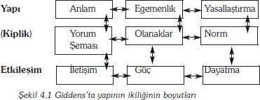
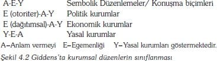
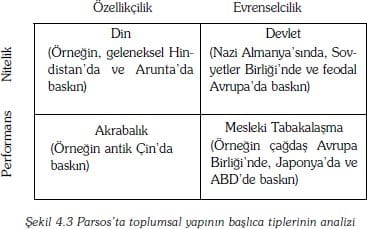
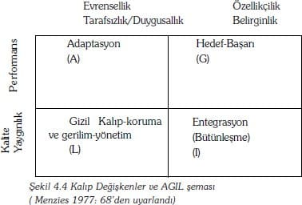
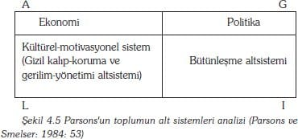
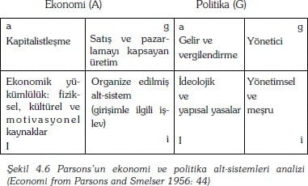
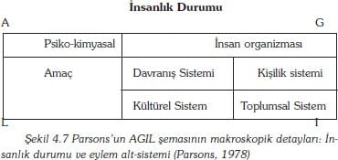
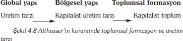
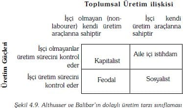
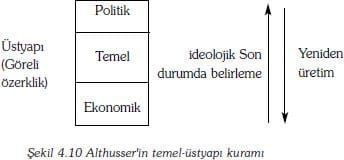

Bu bölüm, Ali Esgin tarafından çevrilmiştir.
Pek çok toplumsalbilimci, gözleyerek keşfettikleri modellere açıklık kazandırmak için, çoğunlukla 'toplumsal yapı' terimini kullanmaktadır. Bu terimi kullanma nedenleri şu şekilde sıralanabilir: ilkin, bu yolla ele alınan bir olgunun, belli özellikler taşıyan bir dizi birimler halinde (örn: roller, sınıflar, değer-bağlılıklar, cinsler, kurumlar) incelemesi mümkün olmaktadır; ikinci olarak, bu birimler, açık bir şekilde, birbirleriyle ilişki içerisindedirler; üçüncü olarak, birimler arasındaki ilişkiler, ele alınan olguya, bir bütünlük/tamlık anlamına gelen özel bir model verecek şekilde, bir araya gelmektedirler; ve dördüncü olarak, bu ilişki kalıpları, zaman içinde göreli olarak dengeli ve kalıcıdırlar.
1950'li ve 1960'lı yıllarda, çekirdek ailenin yapısını böyle bir yapı anlayışıyla tanımlamak popüler olmuştu. Buna göre, yapıyı oluşturan birimler, anne, baba, karı-koca, kız kardeş, erkek kardeş, oğul ve kız biçiminde tanımlanan rollerdir. Roller arasındaki ilişkiler de bu şekilde tanımlanmaktadır. Örneğin, karı-koca ilişkisi, eşler arasında karşılıklı bir evlilik bağı ve özel bir cinsel yaşam içermektedir. Baba-oğul ilişkisi ise, otoriter ve araçsaldır. İlişkilerin, çekirdek ailenin yapısal modelini oluşturacak şekilde birbirine bağlı olduğu söylenmektedir. Diğer bir deyişle, sadece çocuklar kardeş olabilir ve yine sadece karı-kocalar anne-baba olabilirler. Sonuçta yapının, bu biçimiyle sanayi toplumlarının her kesiminde veya daha genel olarak, bütün toplumlarda ve tarihsel dönemlerde yaygın olduğu, elde edilen kanıtlarla gösterilmektedir.
Böyle bir yapı tasarımının, kurama bir etkisinin olabilmesi için izlenebilecek üç yol vardır. Birincisi, yorumsamacı (constructionist) sosyolojiden gelir ki bu, yapının, bilinçli ya da bilinçsiz, insan yaratımı olduğunu söyler. Buna göre, yapı, insan eylemleri sonucu ortaya çıkan bir düzenlilik olarak görülmektedir. Düşünme ve eylemde bulunma, yapısal düzenlemeleri ve onların doğasında olan kısıtlamaları yaratmaktadır. Giddens'ın yapılaşma (structuration)* kuramı, yapıya dair bu tip bir yaklaşım açısından önemli bir örnektir. Bu teoriye göre, yapının, her birey üzerinde zorlayıcı bir etkisi vardır ve yapı somut gerçekliğin gücüne sahiptir, ancak kaynağı insan eylemlerinin etki alanı içindedir -tüm yapı, onun bütününü oluşturan eylem bileşenlerinin toplamından daha önemli bir gerçekliğe sahip değildir. Dahası toplumsal yapı değişmez ve sabit değildir, aksine esnek ve değişime açıktır.
Toplumsal yapıya ilişkin ikinci bir yaklaşım, yapıyı, bireyler tarafından inşa edilebilen ya da edilemeyen gerçek bir olgu olarak değil, sosyologların zihninde beliren gözlemle ilgili kategorik bir kavram olarak değerlendirir. Bu yaklaşıma göre yapı, ilişkilerin düzenli ve kalıcı özelliklerinin derecelendirildiği, beklenmedik olanlarının ise dışarıda bırakıldığı bir çerçeve, metodolojik ve analitik bir kategoridir. Bu yaklaşım, İngiliz toplumsal-antropoloğu Radcliff-Brown tarafından öne sürülmüştür (1952:192-3). Radcliff-Brown, somut gerçekliğin insanlar arasındaki bir takım gerçek toplumsal ilişkiler olduğunu ileri sürmektedir. Yapısalcı toplumsal-antropologların, bir durumun ayrıntıları ile değil ama toplumsal durumların genellenebilmesi olasılığı ile ilgilendikleri söylenmektedir. Böylece gözlemci, bir ilişkinin genel veya normal biçimini, ortak ve tekrarlanan özelliklerini, belirli örneklerin değişimlerinden soyutlamaktadır. Soyutlanmış genel yapısal biçim, görece sürekliliğe sahiptir ve yeniden değerlendirilebilir, ancak burada yapı, uzun vadeli, kademeli bir süreç veya bir devrimin etkileri sonucunda bile, değişim için sınırlı bir duyarlılığa sahiptir.
Yapıya ilişkin üçüncü yaklaşım, bu bölümün temel konusunu oluşturmaktadır. Bu, 'realist' ya da 'özcü' [essentialist] olarak adlandırabileceğimiz bir yaklaşımdır ve daha çok Kıta Avrupa'sı geleneğinden gelmektedir. Burada yapı, dış görünüşlerin altında yatan, belirleyici bir faktör olarak ele alınmaktadır. Buna göre, günlük toplumsal yaşam ve onu besleyen inançlar, gerçekçi bir görünüşe sahip olsa da, aslında bilinç düzeyinin altında yatan gerçekliği gizlemektedir. İşte bu saklı gerçeklik, bir yapı olarak tanımlanmaktadır. Sosyoloğun görevi kendi içsel mantığına uygun olarak bu özün hem süreklilik arz eden biçimini hem de değişim yollarını temel alan bir teori ortaya koymaktır. Bu bakış açısında, eylem rastlantısaldır. Kuramcının iki aşamadaki görevi ise eylemi yapanın açık ürünü olarak gösterecek şekilde eylem ve yapı arasındaki bağlantıyı aydınlatmaktır.
Keat ve Urry (1975: 124-5) bu çeşit 'katı' yapısal analiz biçiminin olası unsurlarının yararlı bir listesini yapar:
1. Toplumsal olgular, örgütlenmiş ilişkiler sistemi olarak anlaşılmalıdır. Birimler ise, sadece diğer birimlerle ilişkileri açısından ele alınmalıdır.
2. Daha önce de söz edildiği gibi, analistin görevi, gündelik bilgilerimizin arkasında yatan gizli gerçekliği [yapıyı] ortaya çıkarmaktır. Bir dizi değişmez ilişkilerden oluşan bu yapı yasalar ya da kurallarca belirlenmektedir. Söz konusu yapı, yapısal dilbilimde bir takım yazılı olmayan dilbilgisi kurallarından (langue-dil) oluşmakta ve gündelik ifadelerle (parole-söz) düzenlenmektedir. Marxist analizde ise, yapı, maddi dünyanın belirlediği bir gerçekliktir ve diyalektik materyalizmin yasalarıyla belirlenmektedir.
3. Yapılar, biyolojik iletime bağlı olan zihni mekanizmalardır. Bu mekanizmalar bilinçdışı ve evrenseldir.
4. Yapısal analiz tipik olarak semiolojiktir, göstergelerin analizine dayanmaktadır. Bir yandan hem sözü hem de konuşmayı ve öte yandan da diğer kültürel ürünleri içeren göstergeler, analiz edildiklerinde yapısal belirleyicileri açığa vuran bir kod olarak anlaşılmalıdır.
5. Bu şekilde tanımlanan ilişkilerde yapıları düzenleyen temel ilkeler, ikili karşıtlığın (binary opposition) örnekleri olarak belirtilmektedir.
6. Tarihsel olarak evrensel veya eşzamanlı (senkronik) sistemlerin öğeleri ile, tarihsel olarak özel veya artzamanlı (diakronik) öğeler arasında bilinçli bir ayrım yapılmaktadır. Buradaki amaç, yapısal süreçlerin gelişim evrelerini dönemselleştirmektir.
7. Yapısalcılar, toplumsal yaşamın çeşitli alanlarında eşbiçimlilik (izomorfizm) ya da türdeşlik (homoloji) aramaktadırlar. Yapısalcılar aynı zamanda bu alanlardaki dönüşüm kurallarının bağlantılarını da sınamaktadırlar.
Bundan sonraki bölümlerde önde gelen yapısalcı kuramcıların çalışmalar ve bu çalışmalardaki başlıca ilkeler ele alınmaktadır. İlk bölümün temel konuları: Freud'un yapısal bilinç kuramı, Levi-Stauss'un yapısal antropolojisi ve Marx'ın diyalektik materyalizmidir. İkinci bölümde ise, toplumsal yapıyı açıklayan çağdaş ve gelişmiş üç sosyolojik kuram incelenmekte ve karşılaştırılmaktadır: Bunlar, Giddens'ın yapılaşma kuramı, Parsons'un yapısal-işlevselciliği ve Althusser'in yapısal Marxizmi'dir. Son olarak bazı yeni Fransız yapısalcılığının ve postyapısalcılığın örnekleri incelenmektedir.
Temel Düşünceler
Yapı düşüncesi, sosyolojide olduğu kadar, dilbilim, antropoloji, psikanaliz, politik ekonomi ve edebiyat kuramı gibi alanlarda da oldukça yaygın bir geçerliliğe sahiptir. Bu bölümde, yapısalcılılığın hem gerçek hem de belirleyici olduğunu iddia eden görüşlerden en etkili üç anlatım ele alınacaktır.
Freud: Düşünceleri Zorlamak
En iyi bilinen, fakat sosyolojik anlamda en az etkiyi göstermiş olan yapısal görüşlerden biri, Freud'un yapısal zihin kuramıdir. Freud'un temel keşfi, bilinçaltının davranış ve algı üzerindeki etkileridir. Bu keşif, kendi kendine zarar verdiği için bilinçli bir şekilde harekete geçirildiği sırada yorumlanması mümkün olamayan davranışı anlamaya çalıştığından, özellikle kilinik ortamlarda yapılmıştır. Freud, farkında olma düzeyi altındaki zihinsel süreçler tarafından zorlanan anormal davranışları anlamaya başladığında, bu şekilde zorlanmış olduğu anlaşılan tüm davranışları genellemek zorunda kalmıştır. Çok iyi bilindiği gibi, Freud, zihnin yapısını üç öğeye ayırarak tanımlamıştır:
|
Sigmund Freud (1856-1939) |
| Freud insan davranışlarının analizinde en etkili figürlerden birisidir. Bir sosyolog olmamasına karşın, Parsons'un yapısal-işlevselciliğine ve Althusser'in yapısal Marxizmine önemli etkilerde bulunmuştur. Freud, o zamanlar Avusturya Macaristan İmparatorluğunun bir bölümünü oluşturan Çek Cumhuriyeti'nin Freiberg şehrinde doğmuştur. Viyana'da tıp eğitimi almış ve ruhsal hastalıkların tedavisi üzerine yaptığı uygulamalarla bu alanda uzmanlaşmıştır. Ruhsal hastalıkların fizyolojik olmaktan çok psikolojik kaynaklı olduğunu göstererek, modern düşüncede önemli bir değişim yaratmıştır. Ruhsal hastalıkları hastanın bilinçaltındaki itici hisleri [dürtüleri] açığa çıkaran psikanalist yöntemini kullanarak tedavi etmiştir. 1933'teki Nazi istilasından sonra, Viyana'da çalışmalarını sürdürme konusunda ısrar etmiş, ancak 1938 yılında Amerikan Hükümeti tarafından fidye ödenerek kurtarılmıştır. 1939 yılında Londra'da ölmüştür. |
|
Kaynak: Penguin Dictionary of Sociology (1984: Freud, Sigmund); Ritzier (1992:32) |
Bunlar, id (altbenlik), ego (benlik) ve süperego (üstbenlik)dır. İd, en ilkel bilinçaltı öğedir, biyolojik temelli arzulara, ihtiyaçlara ve dürtülere dayanmaktadır. Yani, bu içgüdüler, dış dünyadan gelen zevk verici tepiler şeklindeki hazlara yöneliktirler. Haz talep etmek (gratification-demand) sınırsızdır ve id, talepler aykırı ya da gerçekleşemez olduğunda bile, haz elde etmek için çaba sarfetmektedir. Aslında idin karakteristik yapısal modellerinden biri, içgüdüler arasındaki ikili karşıtlıktır. Wallheim'ın (1971:179-86) belirttiği gibi, Freud, çalışmalarının ilk döneminde, cinsel dürtüler ve öz-sakınım (self-preservation, ben'in korunması, çn.) dürtüleri arasındaki farklılığı sorgulamıştır. Cinsel dürtüler ve öz-sakınım birbiriyle karşıttır, çünkü cinsel dürtüler diğer insanlara karşı duygusal bir bağlılık sağlarken, öz-sakınım insanın ben'ine karşı bir bağlanmayı ifade eder –bir dürtünün maksimum hazzı diğer bir dürtünün bastırılmasını gerektirir. Freud'un sonraki çalışmalarında, bu karşıtlık, cinsellik/doğurganlık (yani, Eros) ile saldırganlık, kendini (ben'i) yoketme/nefret dürtüleri (yani, Thanatos)* arasında bir karşıtlık olarak yeniden kuramlaştırılmıştır.
Ego'nun işlevi, id'i dış dünyaya bağlamaktır. İd isteklerini tatmin etmeye çabalalarken ortaya çıkan ikincil ve aşamalı bir gelişmeyi de ego temsil eder. Ego, insanı öyle yönlendirir ki, insanın tatminini en yüksek dereceye çıkarır. Nitekim, aç gözlü id'i doyurmak için, talepkar ve ısrarlı bir şekilde daha çok yiyecek, daha çok rahatlık, sıcaklık, cinsellik ve benzeri şeyler aramaktadır. Halbuki, id tamamen, ego ise kısmen bilinçdışıdır. Ego, hazın olası kaynaklarını ve engellerini göstererek, id'e dış dünyayı sunan algısal öğelere sahiptir. Ayrıca, tatmin isteğinin kaynaklarını en çoklaştırmak (maksimize etmek) amacıyla, dış dünyayı değiştirerek ve düzenleyerek, id'i dünyaya sunmaktadır. Tüm talepler karşılanamaz. Bu nedenle, talepler çeliştiğinde, egonun önemli, bilinçdışı işlevi, kaçınılmaz olarak ego'yu harekete geçiren zevk arayışı ilkesini reddederek ya da geciktirerek, id'i baskı altına almaktadır. Dolayısıyla, ego ve id devamlı çatışma halindedirler, "İd'le olan ilişkisinde ego at sırtındaki bir biniciye benzer, binici, atın üstündeki en büyük güçtür ve onu kontrol eder, fakat aynı zamanda attan ayrı olarak düşünülemeyeceğinden, gitmek istediği yere doğru atı yönlendirmek zorundadır (Freud 1965:733).
Fakat, ego toplumda özgürce dolaşamaz, id'in ağırlığını taşıyacak ve harekete geçirecek, id'i tatmin edecek öğeler arar. Er geç id'in tatmin talebini en üst düzeye ulaştırma çabası içinde olan diğer egolarla karşı karşıya gelerek çatışır. Çatışmaların en öncelikli olanları anne-baba tarafından karşılanır. Talepleri engellenmiş olan ego, anne-babaya karşı saldırganlık tasarımı içine girer, ancak bu saldırganlık etkisiz olduğu ölçüde, Freud'un tanımladığı gibi, tersine döner, içselleşir ve aklın bir parçasına haline gelir. Böylece, sosyologların normatif baskılar gibi anlayabileceği temel dirençler, süpereogo olarak bilinen kişilik içinde özümsenmiş olur. Süperego baskı kaynağı olmaktan çok dış dünya haline gelir. Kısaca, süperegonun bilinçdışı düşünceye baskısı ile id'in sonu gelmeyen istekleri savaşır. İd ve süperego arasındaki bu zıtlık ego tarafından uslamlama ve arabuluculuk yoluyla uzlaştırılmalıdır.
Anormal davranışlar, olumsuz şartların aşırılığı ya da dayanılmaz istek ve baskıların üstün gelmesi durumunda egonun id ve süperego arasında uzlaştırma etkisini yitirdiği zaman ortaya çıkmaktadır. Wolheim (1971:92-3, 130-2) Freud'un iki ünlü anormallik örneğinden söz etmektedir. Bu anormal davranışlardan biri, Freud'un "Dora" diye adlandırdığı, psikomatik apandist krizi geçiren genç bir kadının başından geçmiştir. Freud bunu, Dora'nın babasının metresinin kocası olan "K"ya duyduğu aşkın isterik anlamıyla eşdeğer tutmaktadır. Süperego böyle bir davranışı reddetmektedir, ancak id'in bu arzusunun reddedilmesi onun kendisine zarar vermesine yol açmaktadır. Zıt bir durum, sevgilisine işkence etme gibi istenmeyen fantaziler kuran ve 'sıçan-adam' (rat-man) lakaplı bir ordu mensubunun vakasıdır. Bu kişi, sevgilisine, sıçan dolu bir kovanın kalçaya sıkıca bağlanarak, sıçanların anusü kemirmesinin sağlandığı bir Çin işkencesine benzer bir şekilde zarar verdiği için böyle adlandırılmıştır. Bu teoride sıçan-adam, sevgilisinin asla kabul etmediği babası adına (özümseme) sevgilisini cezalandırmaktadır. Freud'a göre bu tür bir anormallik, normal haz arayışını baskı altında tutan süperegonun aşırı gelişimiyle açıklanmalıdır.
Freud'u daha önce yedi ilkeyle tanımlanmış yapısalcı kampa kararlı bir biçimde yerleştiren iki önemli görüş vardır. Diğer yapısalcılar gibi, O da yaptığı analizde gizli gerçekliğin incelenmesi problemi ile karşı karşıya kalmaktadır. Bir çok yapısalcı bu yüzden semiotiktir, göstergeleri analiz etmeye ve onların kodlarını çözmeye çalışmaktadır. Bu açıdan, Freud'un deşifre etmeye çalıştığı göstergeler dört alanda görülmektedir: Rüyalar, kaçınmalar, şakalar ve fiziksel septomlar. Bunların en anlamlısı rüyalardır, çünkü rüyalar, bilinçdışı düşüncelerin içeriğinin en sembolik ifadeleridir. Bu sembolleri çözümlemek, rüyada meydana gelen üç sürecin canlandırılmasını gerektirir: Alan yoğunlaştırma, zihni birleşimden daha az içeriğe sahip olan deneyimli rüyadır; yer değiştirme, çağrışım bağıyla birleştirilen diğer gerçek olayların yerini rüyada belli olayların almasıdır; ve simgeleme, resimsel betimleme yoluyla soyut düşüncelerin yorumlanmasıdır (Wollheim 1971:69-70). Analist burada resimsel imgeleri rüyayı görenin anlayabileceği ifadelere dönüştürmeye çalışmaktadır.
Freud'un kuramınin ikinci önemli yapısalcı yönü, insanın gelişim aşamalarını inşa etmesidir. Örneğin, bir bebeğin emme davranışının başlangıcı, ulaşabileceği hiçbir memenin olmadığı durumlarda bile, id'in taleplerini karşılamak için yiyecek aramaya girişmesinin ve egonun başlangıçtaki gelişmesinin işaretleridir. Bu Freud tarafından oral (ağıza ait) aşama olarak tanımlanmaktadır. Daha önemli ve tartışmalı olanı, süperegonun özümsenmesinin belirtilerinin görüldüğü oedipal kompleksle ilgili aşamadır. Oedipal öncesi dönem, erkek çocuk annesine karşı yoğun bir şehvetle (libidinal) bağlıdır ve kimliğini belirlediği fakat annesinin sevgisinde rakip olarak gördüğü babasına karşı, karışık duygular beslemektedir. Oedipal kompleksle ilgili aşama anneye karşı libidinal bağlılığı ve babayı kendinden başka biri zannetmekten vazgeçmeyi gerektirmektedir. Bu aşama, uygun cinsel obje örneklerinin ve böylece seksüel kimliğin özümsenmesini kapsamaktadır. Aynı zamanda, erkek çocuk babasıyla eş tutulduğu için, kendi hassasiyetinin ve durumun kontrolünü üzerine almaktadır.
Bu görüş, çocuk cinselliği adına söylenenleri evrenselleştirdiği için başlangıçta büyük tartışmalara yol açmıştır. Bu konu halen tartışmalıdır, çünkü, erkek çocuklarının deneyimlerinin gelişiminin kız çocuklarınınkinden esasen farklı olduğu öne sürülmektedir. Bu sonuç, Parsons ve Bales (1955; bkz. s:109-15)'in Freud'un oedipus kompleksi kuramınin sosyolojik bir uygulamasında öne çıkmaktadır. Burada erkeklere ve kızlara hem uygun seksüel eğilimleri hem de daha genel rol belirlemeyi özümsemeleri öğütlenmektedir. Böylelikle, kızlar etkileyici ve itaatkar olmayı öğrenirlerken, erkekler yol gösterici ve otoriter olmayı öğreneceklerdir. Eğer bu farklılıkların zihnin temelindeki yapı tarafından belirlendiği kabul edilseydi, bunların aynı zamanda sabit/değişmez olduğu da kabul edilebilirdi.
Levi-Strauss: İlkel Düşünceler
Freud, insan davranışlarının evrensel özelliklerinin, insan zihninin olağan yapısından kaynaklandığını ileri sürmektedir. Bu düşünce tarzı, Freud'un kuramıyla Levi- Strauss'un yapısal antropolojisini birleştirmektedir. Levi-Strauss sürekli bir biçimde ilkel insanlarla modern olarak nitelenen insanlar arasında ortak bir bağ kurmakta ve insan doğasının değişmezliğine vurgu yapmaktadır. Ona göre, zihnin bilinçdışı etkinlikleri, biçimi içeriğe empoze eder; öyleyse biçimler bütün toplumlar için temelde aynıdır. Bu nedenle, bütün toplumları kapsayan geçerli bir yorum elde etmek için, geleneklerin ve davranış biçimlerinin temelini oluşturan bilinçdışı yapının anlaşılması zorunludur (Levi-Strauss, 1977:21).
|
Claude Levi-Strauss (1908-1988) |
| Levi-Strauss Yahudi bir ailenin çocuğu olarak Belçika'da doğmuş, Paris'te felsefe eğitimi almıştır. Önceleri akademik bir kariyer yapmayı düşünmemesine karşın, 1934 yılında öğretmenlik yapmak için Brezilya'ya gitme fırsatı bulmuş, orada yerli halk üzerine çalışmalar yapmıştır. Onu Antropolojiyle ilgilenmeye yönelten burada yaptığı çalışmalar olmuştur. 1940'lı yıllar boyunca New School for Social Research'da dersler vermiş, aynı zamanda diplomatlık yapmıştır. 1950 yılında Fransa'ya dönmüş ve 1958 yılında College de France'da Profesör olmuştur. Hala bu ülkenin en seçkin aydınlarından biri olarak anılmaktadır. |
|
Kaynak: Beilharz (1991: 160) |
Levi-Strauss'un yapıyı açıklama amaçlı ilk girişimi, evlilik kuralları incelemesi ve bu kuralların ensest tabusuyla ilişkisi üzerinedir (1969). Evliliğin akraba grubunun dışından kişilerle yapılması gerektiğini belirten Levi-Strauss özellikle dış evliliğin kurallarıyla ilgilenmiştir. Levi Strauss'a göre, ne aynı genetik soydan gelenlerle çiftleşmeden (ensest) kaçınma ne de psikolojik karmaşanın meydana getirdiği yapı, pratiğin temeli olamaz. Bu nedenle, evlilik, toplumsal hayata önemli bir fonksiyonel yarar sağlayan, bir değiş-tokuş ilkesi olarak inşa edilmelidir. Evlilikler sürekli kan akrabalığına dayansaydı, toplum ilerledikçe kırılır, küçük parçalara ayrılmış biyolojik aileler topluluğuna dönüşürdü. Eşlerin değişimi, aileler arasında görüşmelerle ve eninde sonunda bu değişimlere hükmeden bir takım normlarla sağlanır. Dış evliliğin kuralları olmaksızın değişim olmaz ve değişimin olmadığı toplum olmaz. Dolayısıyla; 'ensest, ahlaki açıdan kusurlu olması yanında, toplumsal açıdan da saçmadır' (1969:485). Bunun toplumca paylaşılan bir problem olmadığı da bir gerçektir. Bundan dolayı yapı, bilinçsizce taşınmakta ve genetik olarak aktarılmaktadır.
Levi-Strauss (1977) daha sonraki düşüncelerinde yapının dört özelliğinin olduğunu ileri sürmektedir. Birincisi, sistematik özelliklere sahip olan yapı, birçok ögeden oluşur ve bu ögelerin hiçbiri diğer tüm öğelerde de değişikliklere neden olmadan değişim gösteremez. İkincisi, yapıyı oluşturan öğeler arasındaki ilişkiler, çeşitli alanlarda (örneğin, akrabalık, ekonomik, politik, mit) yinelenirken dönüşebilir. Üçüncüsü, öğeler arasındaki ilişkiler belirlidir, öğelerden birinin değişimine yapının ne şekilde tepki verebileceği önceden kestirilebilir. Son olarak, bir yapının varlığı, toplumsal yaşamın tüm öğelerini anlayabilme yolunu ifade eder (1977:289-90)[23]
Levi-Strauss'ın kuramındaki asıl amaç, insanların kendileri hakkında anlattıkları hikayeler şeklinde tanımladığı mitleri analiz ederek yapının açığa çıkarılmasıdır. Levi-Strauss öncelikle mitlerin dilbilimsel bir özellik taşıdığını ancak, buradaki amaç dilin yapısını değil, toplumun yapısını keşfetmek olduğundan, yapısal dilbilimciden daha üst düzeyde bir analiz yapılmasının zorunlu olduğunu ileri sürmektedir. Mitin birimleri, sesbirimleri (fonem) ya da biçimbirimleri (morfem) değil, fakat ilişkileri ifade eden cümleler olan mitin en küçük anlamlı birimleridir (mythemes). Bu anlamlı birimler bir mitin ya da mitin içeriğinin bozulmuş olması durumunda kategorilere ayrılmalıdır. Mitin en küçük anlamlı birimlerinin mantıksal birlikteliği, onların etkili anlatım sırasına karşı olarak, bir yapı oluşturmalıdır. Bu süreç, oyun kağıtları hakkında bir ön bilgi olmaksızın, bazı kart oyunlarını izleyerek kağıt destesini yeniden şekillendirmeye benzemektedir.
Levi-Strauss, bu süreci "Oedipus Miti"ni analiz ederek göstermektedir. Mit, burada 'Oedipus'un babasını öldürmesi', 'Oedipusun ejderhayı öldürmesi', 'Oedipusun annesi ile evlenmesi' vb. gibi anlamlı birimlere ayrılmaktadır. Mitin bu birimleri, dört sütunda gösterilerek düzenlenmektedir, sırasıyla; kan bağlarına aşırı önem verme; kan bağlarını inkar etme; canavarların öldürüşü; ve dik yürümekteki zorluk kaynaklarıdır. 1.sütun, kan bağına ve böylece insanlığın evlilik orijinine önem vermektedir; 2.sütun, bunu inkar etmektedir, 3.sütun, dünya halklarından olmayan farklı canavarlara üstünlük sağlamasından bahsemektedir; 4.sütün, dünya halkından olan insanlardan bahseder; çünkü, topallıkla bu özelliğin birleşimi genellikle bir çok kültürde bulunur. Böylece, 1.sütunla 3.sütun arasında, 2.sütunla 4.sütun arasında türdeşlik oluşurken, 1.sütunla 2.sütun, 3.sütunla 4.sütun arasında bir tezatlık oluşmaktadır. Bu analiz şunu göstermektedir: "Mit, insanların yerli (autochthonous) olduğu kabul edilen bir kültürde, gerçekte erkek ve kadının birleşmesinden meydana gelen insanın bilgisiyle, bu teori arasında tatmin edici bir geçiş bulmada karşılaşılan zorluklarla ilgilidir" (1977; 216). Levi-Strauss din, biyoloji ve insanların birbirlerine anlattıkları hikayelerdeki bu çözümsüz çelişkiyi ortaya çıkaran, insanlar arasında evrensel bir tezatlık olduğunu söylemektedir. Bununla birlikte, onların çelişkili bilgileri bilinç dışıdır ve sadece yapısal analizle açığa çıkmış olabilir.
Oedipus mitinde kurulan şekliyle ikili-karşıtlık (binary opposition), sembolik ve mitsel sistemler olarak yapının betimlenmesinde Levi-Strauss için merkezi bir niteliktir. Levi-Strauss, ihtimallerin üç köşeli bir sistemini üretmek için sık sık ikili karşıtlığın iki grubunu kesiştirecektir. Bunların en ünlüsü, bulunabilen yiyeceklerdeki olası durumların sınıflanmasını temel alan, yemek pişirmeyle ilgili temel üçgendir. Buradaki ikili karşıtlık, doğa-kültür ve normal-dönüşmüş karşıtlığıdır. Normal, ne kültürde ne de doğa da değişmemiş olan 'çiğ' yiyecektir ve bu nedenle üçgenin zirvesini oluşturmaktadır. Kültürel açıdan 'pişmiş' olanların ya da doğa açısından 'çürümüş' olanların herhangi biri, dönüşüme karşılık gelmektedir – 'pişmiş' ya da 'çürümüş' biçimler üçgenin taban noktalarını teşkil etmektedir. Üçgendeki, üç nokta bulunabilen yiyeceklerdeki tüm olanaklı durumları kapsamakta ve ayrıştırmaktadır. Ayrıca, bunlar bütün kültürlerde bulunan yapısal tümellerdir. Bundan dolayı, insanın dünyayı anladığı ve organize ettiği bu kategorilerin yapı bakımından belirlendikleri söylenebilir.
Marx: Çelişkili Düşünceler
İlk bakışta, Marx'ın toplumsal değişim kuramı, Levi-Strauss ve Freud'un teorileriyle aynı kategoriye girmeye hazırmış gibi görünmeyebilir. Freud ve Levi-Strauss yapıların, zihinsel olarak bilinçaltında olduğunu vurgularken, Marx'ın vurgusu, maddi üretim yapıları üzerinedir. Ancak, üçü arasındaki bağıntı, yapıların taşındığı alanda değil, daha çok bilinçliliği hesaba katmadan çalışmış olmalarında yatmaktadır.
|
Karl Marx (1818-1883) |
| Marx, şimdiki Polonya'nın doğu sınırındaki Prusya'nın Triner şehrinde doğdu. Ailesi Museviydi, ancak daha sonra Hıristiyanlığa döndü. Doktorasını aldığı Berlin'de 'Genç Hegelciler' olarak adlandırılan radikal filozoflar grubuyla ilgilendi. Eserlerinin çoğunda, Genç Hegelcilerin ismini aldıkları büyük filozof Hegel'le tartışmaktadır. İş bulmak amacıyla 1843'de Paris'e gitti ve burada yaşamı boyunca birlikte çalıştığı arkadaşı ve minnettarlık duyduğu kişi Friedrich Engels ile tanıştı. Marx, devrimci yazı ve etkinliklerinden dolayı 1845'de Fransa'dan Brüksel'e sürgün edildi. Ancak, çok az Avrupa hükümeti sosyalistlere dostça yaklaşıyordu. Sonunda 1849'da Londra'ya yerleşti, burada yaşadı, yazdı, politika yaptı ve yoksulluk içerisinde öldü. |
|
Kaynak: Penguin Dictionary of Sociology (1984: Marx, Karl); Rıtzer (1992:46-47) |
Marx'ın üretim ilişkilerini, insan toplumu için temel örgütlenme ilkesi olarak kabul ettiği alanlar, insan doğası hakkındaki kesin varsayımlarıdır. Ana varsayım, yaratıcı emeğin insan varlığının merkezi olduğudur –bu nitelik insanı diğer hayvanlardan farklı kılmaktadır. Emek ile Marx, insanların fiziksel dünyada kendilerini ifade ettikleri her hangi bir tür etkinliği dile getirmek istemektedir. İnsanlar doğuştan yaratıcıdırlar ve doğal etkinlikleri, müdahaleleri yansıtabilecek şekilde toplumsal ve fiziksel dünyayı dönüştürmektedir. Emeğin sonucu olan ürünler, insanın kendini ifade etme biçimi olmasından dolayı, insan doğasının bir parçasıdırlar. Bununla birlikte, insanlar için bu yaratma eylemlerine ve bu yolla üretilen şeylere hakim olamamak ve bu nedenle insan doğasını bastırmak ya da inkar etmek mümkündür.
Marx'ın yapısalcı yaklaşımının en açık ifadeleri, Kapital (1970:20-22) den yaklaşık sekiz yıl önce 1859'daki ilk öncü çalışmalarının önsözünde görülmektedir. Marx ilk olarak, insanın herhangi bir yerdeki toplumsal varlığının yapılanmasında, onların iradelerine bağlı olmayan toplumsal ilişkiler tarafından kuşatıldığını söyler. Bu ilişkiler, üretim sürecinin çevrelediği ve üretim sisteminin gelişiminin tarihsel aşamalarına özgü bir değişim gösterecek ilişkilerdir. Üretim ilişkileri, toplumun ekonomik temeli ve toplumun altyapısıdır. Bu ekonomik temel [altyapı] üzerine genel sosyal, politik ve entelektüel yaşamla ilgili ilişkilerin üretimi amacıyla siyasi ve hukuki üst yapı inşa edilir. Böylece şu ünlü söylem ortaya çıkar: 'İnsanların yaşam biçimini belirleyen bilinç değil, aksine bilinci belirleyen onların yaşam koşullarıdır' (1970: 21).
Marx burada ekonomik temelin iki yapısal boyutunu ayırır. Bunlar; teknolojik örgütlenmeye özgü ham maddeler, vasıflar, teknik olanaklar ve benzerlerini kapsayan maddi üretim güçleri ile bu düzenlemeleri denetim altında tutan, özellikle üretim araçlarının mülkiyetini kapsayan ilişkiler, yani toplumsal üretim ilişkileridir. Gelişimlerinin belli bir noktasında bu iki boyut birbiriyle çatışacaktır, genellikle de toplumsal üretim ilişkileri, maddi üretim güçlerinin gelişimini engelleyecek ve insanoğlu bir devrimle bu toplumsalilişkilere karşı çıkmaya zorlanacaktır. Ekonomik temelde oluşacak böyle bir değişiklik üstyapının tamamını dönüştürecektir.
Maddi güçlerle toplumsal ilişkiler arasındaki bu çatışma, Marx'ın en önemli yapısal çelişki örneğidir. Yapısal çelişki, toplumsaldeğişimlere açıklama getirdiğinden sınıf kuramı için bir anahtardır. Bu nedenle, Marx genellikle "diyalektik materyalist" olarak anılır. "Diyalektik" terimi Marx'ın belirttiği yapısal unsurlar arasındaki ikili karşıtlık ve çatışma durumu için kullanılırken, Marx'ın düşünce, dil ve akrabalıklar arasındaki uyuşmazlıklardan çok, üretim yapısındaki çatışmayla ilgilenmesi "materyalist" terimiyle ifade edilmektedir. Böylece Marx, bazı bireylerin bir bölümündeki devrimci bilincin maddi koşulların yapısındaki çelişkilerle açıklanabilirliği örneğinde ısrar etmektedir. Bundan dolayı, maddi temeli beklenen olgunluk derecesine ulaşmaksızın hiçbir toplumsal düzende değişiklik gerçekleşemez.
Marx, insanların üretimlerini bireysel olarak kendilerinin kontrol ettiği, ilkel komünizm düzeninden, üretimlerini toplumca kontrol ettikleri ütopik komünizm düzenine gelişerek geçişlerini dört basamakta toplamaktadır. Bunlar Asya tipi [ATÜT], ilkel köleci, feodal ve modern burjuvazi ya da kapitalist üretim modelleridir. Buradaki kapitalizm öncesi üç üretim dönemi, çalışmaları boyunca Marx'ın en az ilgilendiği dönemlerdir. Bunlar, kısaca aşağıdaki gibi özetlenebilir:
• Asya tipi üretim tarzı [ATÜT]: Bu üretim tarzında, üretim güçleri geniş ölçekli imar işlerinin gereksinimine odaklıdır. Sistem temel olarak tarıma dayanır, toplu pirinç üretiminde olduğu gibi, geniş sulama düzenini gerekli kılar. Üretim araçlarının mülkiyetinin, topluma ya da halka ait olduğu üretim ilişkilerine dayanır. Ancak, toplumsal mülkiyet dinsel olarak yasallaşmış despot bir liderin merkezde bulunmasını da gereklidir. Despot lider, uygarlığın yapılanması için çalışanların ödemesi gereken vergi miktarını, zorla artırır ve olası çalışan direnişine karşı hazır bir ordu bulundurur.
• İlkel köleci üretim tarzı: Bu üretim tarzında, Marx Roma'yı merkeze almaktadır. Üretimin kilit aracı toprak ve üretim güçlerinin odağı emek-yoğunluklu (labour-intensive) tarımdır. Toprak, mahsulün üretimini kölelerin emeğinden sağlayan şehir kökenli aristokrat sınıfın hakimiyetindedir. Hakim sınıfın başlıca eğilimi gösterişçi tüketimdir. Toprak mülkiyetinin genişlemesinin, profesyonelce biçimlendirilmiş bir ordunun, komşu ülke topraklarının fethiyle sağlandığı görülür. Toprak fethedildikçe üzerinde yaşayanların tarımsal emek için köleleştirilmesi de beraberinde gelmektedir.
• Feodal üretim tarzı: Feodal üretim tarzıyla ilkel köleci üretim tarzı arasındaki temel fark, feodal üretim tarzında toprak sahibi olan hakim sınıfın kırsal kökenli olmasıdır. Feodal sistem yerleşik toplumsal bir sistemdir. Bu sistemde toplumsal kurumlar "hırsız baronların" sürekli tehdidi altındadır. Üretim ilişkileri bu nedenle çalıştığı önemli bir miktarda toprağı denetiminde bulunduran serf'e yani tarım köylüsüne dayanmaktadır. Bununla birlikte serf, lordun üretimine çalışma süresi oranınca katkıda bulunan yerel yöneticiyle "hizmet ilişkisine" sahiptir (Marx and Engels 1979: 84-136).
Bu üç kapitalizm öncesi biçime zıt olarak kapitalist üretim biçiminin temel özellikleri şu şekilde sıralanmıştır. Birincisi, üretim dağıtımının ve mübadelesinin (sermaye) araçları bireyler tarafından kendi çıkarları için sahiplenilir -bu çıkar maddidir ve maliyetlerin dışında, kazanılan artık gelirle oluşur. İkincisi, büyük ölçekli araç gereci gerektiren teknolojilere dayandığı için mülkiyet nispeten az ve belirli ellerde toplanma eğilimi gösterir. Üçüncüsü, ürünler, onları yaratanların doğal mülkiyeti altında değil, daha çok piyasada alınıp satılan mal olarak değerlendirilir. Dördüncüsü, üretim araçlarına sahip olmayanlar üretim süreci içerisine dahil edilebilir, ama belli bir parasal kâr için belli bir miktarda iş gücü sağlayan kontratlı ücretli işçiler olarak. Beşincisi, fiyat rekabeti ve kâr arttırımı, yönetici sınıfı bir "emek süreciyle" meşgul olmaya zorlayacaktır. Yönetici sınıf hizmetleri uzmanlaştırmaya ve standartlaştırmaya çalışacaktır, böylece işçiler vasıfsızlaşacak ve ücret artışını talep etme noktasında yetersizleşeceklerdir ve yine böylece işçilerin yönetimi ve denetimi kolaylaşacaktır.
İşçiler için önemli birçok sonuçtan biri "yabancılaşmadır". Hatırlanacağı üzere Marx, üretimi, insan doğasının temeli olarak görmektedir. İnsan emeğinin ürünleri bireyin kendisinin objektif anlamıdır. Kapitalizmde ücretli iş ve şeyleştirme insanoğlunu kendi doğasından koparmıştır. İnsanın kendi yarattığı ürünler, onlardan piyasada alınıp satılmak için çekip alınmıştır. Çalışma koşulları başka insanlarca düzenlenip kontrol edilir; ve bireysel, rekabetçi, maddiyatçı anlamda birbirlerine düşman olurlar ki Marx bunu "meta fetişizmi" olarak adlandırmıştır. Bununla birlikte, yabancılaşma terimi bireyin durumunu ifade etmesine rağmen aslında yapısal bir kavramdır. Freud ve Levi-Strauss'a paralel olarak, yabancılaşma bilinçdışı bir süreç olarak görülmüştür. Gerçekten de yabancılaşmanın etkisi arttıkça, işçilerin onun varlığını fark etmesi daha zor olacaktır. İşçiler yaşam koşullarını iyileştirmek yerine, maddi kazanç peşinde koşmakta ve kapitalizmin var olabilecek en iyi sistem olduğu fikrini safça kabul etmektedirler.
Yabacılaşmanın kaynağı sermaye ve işçi sınıfı arasındaki kaçınılmaz sömürü ilişkisidir. Kapitalist üretim tarzında, sömürü modeli şu şekilde açıklanabilir. İşçiler sınırlı miktarda ücrete sahiptirler. Kendilerinin ve ailelerinin yemek, giyim ve barınma ihtiyaçlarını karşılamalı ve eğitim görüp ustalık edinmelidirler. Bu ihtiyaçları karşılanmadan iş gücü oluşamaz ve bundan dolayı bu ihtiyaçlar iş gücünün üretiminin maliyeti olarak değerlendirilirler. Bununla beraber, işçi bu ihtiyaçlarını karşılamak için sadece her hafta belli bir zaman çalışma ihtiyacı duymaktadır. Eğer bir kapitalist, işçileri daha fazla süreyle çalışmaya zorlayıp, ancak onlara sadece bu ihtiyaçlara bedel miktardaki parayı öderse, üretilen metayı bir "artı değer" elde edebilmek için mübadele edebilir. Daha sonra bu artı değer anaparanın miktarını arttırmakta kullanılabilir, nitekim kapitalistin işçi üzerindeki gücü de artmış olur. Böylelikle, kapitalist, sürekli olarak işçinin emeğinin bir kısmını çalar ve onu emeğine yabancılaştırır. Dahası, kapitalist ve işçi arasındaki uçurum gittikçe genişler.
Böylece, kapitalist üretim tarzı belirli bir sınıf sisteminin biçimlenmesine yol açmaktadır. Bu sistemde toplum, üretim araçlarının sahibi olan kapitalist (burjuvazi) ve hayatta kalmak için emeğini satmak zorunda kalan işçi (proletarya) olarak bölünür. Burjuvazi, yalın bir şekilde sömürücü olsa bile, modern toplumun devasa ekonomik ve mimari başarısını yaratan dönüştürücü ve enerjik güçtür. Bu esnada, proleterya, burjuvazi sınıfı ve devleti tarafından bir ordu gibi organize edilmiş bir kitle sınıfıdır -makineleşme ve bürokratik denetim aracılığı ile köleleştirilmiştir. Bu, kapitalist sınıflı toplumun soyut yapısındaki temeli meydana getirmektedir. Belli bir zamanda, sınıf ilişkilerinin görünen modeli henüz kompleks ve yerleşmemiş olabilir ama eninde sonunda bu model iki büyük tarihsel sınıfın temeldeki gerçekliği tarafından belirlenmektedir.
Söz konusu soyut sınıf yapısı, şu özelliklere sahiptir: Dikotomi– iki şey arasında bir ikili karşıtlık (binary opposition) içerir, karşılıklı olarak bağımlı sınıflar; antagonistic [zıtlık]– sınıfların karşıt maddi çıkarları açısından kapitalist sistemin korunup korunamadığı ve bu çıkarların farkında olup olmadıkları; amaç– sistem isteklerden ya da üyelerinin amaçlarından bağımsız olarak var olur; ve dinamik– toplumsal değişmenin genel yönünü belirleyen sınıflar arasında sürekli bir mücadele vardır.
Zıt (antagonistic) olan karşılıklı bağımlı sınıflar arasındaki yapısal ilişkilerin çelişkisi, Marx'ın modern toplum kuramındaki temel çelişkinin özünü oluşturmaktadır. Buna göre, burjuva sınıfının işgücünü reddetmesi mantıklı değildir ancak işgücünü kontrol altında tutmalı, aynı zamanda sömürmelidir, bununla birlikte burjuva sınıfı tarafından yaratılan işçi sınıfı, ona karşı mücadele etmelidir. Marx'ın artzamanlı (diakronik) analizi bu diyalektiğe bağlıdır. Sonunda, işçi sınıfının yabancılaşmasıyla oluşan katı çelişki, bilinç düzeyini farkında olmadan artırır ve işçiler sadece burjuva sınıfıyla mücadele etmekle kalmaz, aynı zamanda onu yerinden etmek için çaba sarfeder. Böylece, işçi sınıfı kendi varlık temeli olan burjuva sınıfını çökerterek, sınıfsız toplumun koşullarını hazırlar. Burjuva sınıfı yerinden edilirken tüm sınıf yapıları yok edilir.
Çağdaş Toplumsal Yapı Kuramları
Bu bölümün girişinde belirtildiği gibi, prensipte, yapı kavramı sosyolojik kurama üç değişik biçimde girmektedir: İnsan eyleminde beliren toplumsal ilişkilerin bir özelliği olarak; toplumsal yaşama model olan özellikleri saptayan, bir dizi analitik kategori olarak; veya toplumsal yaşamın görünümlerini belirleyen bir dizi gerçek ve temel ilişki olarak. Bölüm 1'de tanıtılan terimlere göre sırasıyla, bu üçü şu şekilde tanımlanabilir; yorumlayıcı yaklaşımlar, işlevselci yaklaşımlar ve eleştirel yapısalcı yaklaşımlar. Temel konular kısmında, eleştirel yapısalcı yaklaşım ile ilgili incelenmiş tartışmalar var ama biz şimdi, özel olarak, eleştirel yapısalcılığı, diğer geleneklerle kıyaslamamıza izin verecek sosyolojik gelişmeleri inceleyeceğiz. Bu bölümde yorumlayıcılık, Giddens'ın yapılaşma kuramıyla; işlevcilik, Parson'ın işlevci zorunluluk projesiyle; eleştirel yapısalcılık ise Althusser'in Marx'ı yeniden okumasıyla, temsil edilmektedir.
Giddens: Kurgucu Versiyon
Giddens'ın eyleyenlik (birey)* (agency) kuramı bölüm 2'de tartışılmaktadır. Burada yapılaşma kuramının "yapı", "sistem", "yapının ikiliği" (duality of structure) (1984:16) durumu gibi merkezi kavramlar ele alınmaktadır. Giddens'ın (1984:16-22) yapı düşüncesi bu bölümde incelenen yaklaşımların çoğundan farklıdır. Giddens'ta yapı, biçimsel olarak, ancak anlaşılması oldukça güç bir şekilde tanımlanmaktadır; buna göre yapılar, "toplumsal sistemlerde zaman-uzamın (mekanın) birbirine "bağlanmasına" izin veren yapılaşmış, birbirinden ayırt edilebilir derecede benzer olan, toplumsal pratiklerin, değişen zaman ve uzam dilimlerinde varolmasını mümkün kılan ve bunlara "sistemik" biçim veren özelliklerdir" (1984:17). Bu nitelikler, aktörlerin, eylemlerini gerçekleştirirken kullandıkları kurallardan ve kaynaklardan oluşmaktadır. Giddens, bir anlamda, nasıl eylemde bulunulacağının bilgisinin pratik bilinçte ifade edilmesini, bir formül veya süreç gibi anlamlandırmaktadır. Toplumsal düzenlemeler, değişik zaman ve uzamlarda, benzer yollarla, yeniden üretilecektir, çünkü, yapısal kurallar müşterek olarak bilinmekte veya en azından bir toplumsal durumun bütün bireyleri arasında örtüşmektedir. Giddens'ın kaynak olarak ifade ettiği şey daha karmaşıktır, bu kaynaklardan ancak "gücün uygulandığı iletişim araçları" olarak söz edilmektedir (1982:39). Bununla beraber, dışsal ya da fiziksel kaynaklardan değil, özerkliğin ya da bağımlılığın yerleşmiş modellerinden bahsedilmektedir. Giddens, yapının aktörler için, içsel olmasına rağmen, aynı zamanda objektif, yani bağımsız ve bireyler açısından kısıtlayıcı olduğunu ve yapının 'gerçekte' sadece, özellikle eylemler tekrar edildiğinde ortaya çıktığını belirtmektedir. Bu kavramlara göre, sözgelimi yağlı bir kot pantalon ve t-shirt'lü birinin pahalı bir restorana alınmadığı durum dışında, (ki bu alınmama durumunda bile kesinlikle bir kısıtlayıcı vardır) herhangi bir sınıf yapısından bahsedemeyiz. Bununla birlikte, aktörlerin pratik bilinçlerinden gelen kısıtlama, belleğin (memory traces) gözden geçirilmesiyle ilgilidir ve dışsal olarak belirleyici değildir.
Şimdi Giddens'ın geniş ölçekli ve sürekli olan toplumsal olguları nasıl kavramlaştırdığına bakalım. Bunlar aynı zamanda yapılaşma sürecinin sonuçlarıdır. Aktörler, pratik bilinçteki zımmi bilgileriyle "toplumsal sistemleri" yaratırlarken yapıyı üretip, yeniden üretirler (1982:34-5). Toplumsal sistemler, tam anlamıyla yeniden üretilmiş yapılardır. İnsanın gerçek ve somut eylemlerinden oluşurlar; bireysel aktörlerin ve toplulukların birbiri arasındaki, birbirlerine bağımlılık ilişkilerini kapsarlar; ve bağlantılı olayların zaman boyunca akışını içerirler. Bu nedenle, toplumsal sistemler, toplumsal olguların sürekli görünümleri olan ve pratik bilincin en derinine döşenmiş "kurum"lardan ayrılmalıdırlar.
Sistemler, "sistemlilik" derecelerine göre, yani içlerinde hangi bağımlılıkları ve süreklilikleri yeniden ürettiklerine göre çeşitlenirler. Tümleşik bir sistem, aralarındaki özerklik ve bağımlılık ilişkilerinin bir düzene konulduğu bireyler ve/veya topluluklar arasındaki uygulamaların kabul edilmiş karşılıklılığının olduğu bir sistemdir. İki çeşit bütünleşme vardır: bireyler arasındaki anlaşmaların karşılıklılığı anlamına gelen toplumsal bütünleşme; ve topluluklar arasındaki karşılıklı alışveriş anlamına gelen sistem bütünleşmesi.[24] Önceki, düşünümsel kendi kendini-izleme (reflexive self-monitoring) yoluyla, ikincisi ise şekil 2.2 'de belirtilen geribildirim dönütü aracılığıyla başarılabilir.
Giddens'ın vurguladığı, "ikili", yapılar ve eyleyicilerdir, yani ikilik tek bir olgunun iki yüzüdür. Bir "ikilik"- aralarında nedensel ilişkiler bulunabilen iki bağımsız olgu- olarak anlaşılmamalıdır. Yukarıda çeşitli noktalarda belirtildiği üzere yapı, bireylerde içseldir ve onlara hem imkan tanıyan hem de kısıtlayandır. Hem araç hem de sonuçtur, yani eyleyenler olarak aktörler, kendi yarattıkları eyleme rehberlik edebilmek amacıyla yapıları kullanmaktadırlar.
Özet olarak, yapı, sistem ve yapılaşma arasındaki analitik farklılıklar aşağıdaki gibidir;
• Yapı, eylem için araç ve formül sağlayan kurallardan ve kaynaklardan oluşur.
• Sistemler, bireyler/topluluklar arasındaki organize edilmiş, düzenli ve kalıcı ilişkilerdir; ve
• Yapılaşma, yapıların sistemlere dönüştürülmesini sağlayan durumları ve iletişim araçlarını içermektedir (Giddens 1984:25).

Yapılaşma, yapısal özelliklerle etkileşim'in benzer görünümlerini birbirine bağlayan üç kiplikten oluşur (bkz. şekil 4.1). Dolayısıyla, eyleyenler/aktörler, kendi eylemlerini meydana getirebilmek için yapılaşmanın kipliklerini kullandıklarında, yapısal özellikleri yeniden üretirler. Eyleyenler iletişim kurarken, pratik bilinçte yer alan bilgi yığınlarındaki tipikleştirilmiş, yorum şemalarını kullanırlar. Böylece, göstergeleri olgulara ve birbirlerine bağlayan anlamın kurallarını yeniden üretirler. Aynı şekilde eyleyenler, diğerlerini kontrol ederken veya diğerleri tarafından kontrol edilirken olanaklara dayanırlar ve böylece egemen yapıları yeniden üretirler. Son olarak, diğerlerinin davranışlarını onaylarken (kabul ya da reddederken), normları (uygun davranışın kurallarını) kullanırlar ve bu şekilde yasallaştırmayı yeniden üretirler.
Giddens kurumları da aynı kapsamda açıklamaktadır (1984:33-4). Farklı bağlamlardaki eyleyenler, belli bir nitelik almaya başlayan yeniden üretilmiş kurumlar gibi her kiplikte farklı vurgu veren etkileşime dahil olurlar. Giddens böylece, egemenliğin yeniden üretiminde kullanılan iki tür olanağı birbirinden ayırarak üç parçadan oluşan analizini dört parçalı bir biçime dönüştürür. Dağıtımsal kaynaklar, maddi nesneleri yani mülkiyeti yönetebilme yeteneğiyle ilgilidir; otoriter kaynaklar, insanları, yani fiziksel kısıtları, kişisel etkileri ve örgütsel tutumlar yönlendirebilme yeteneğiyle ilgilidir.

Böylece, Giddens bize örneğin, E(otoriter)-A-Y ve E(dağıtımsal)-A-Y'nin arasındaki farkın ne olabileceğini söylemese bile; eyleyenler öncelikli olarak otoriter olanakları E (otoriter), ikinci olarak sembolik düzenlemeleri (A) ve son olarak da politik kurumları yeniden üretmek için yararlandıkları normları (Y) kullanırlar. Burada toplumunun, her ne olursa olsun, dört kurumsal safha tarafından karakterize edildiği belirtilmiştir; sembolik ve dağınık (kültürel) kurumlar; politik kurumlar ve yasal ve yaptırımcı kurumlar. Giddens, bunların insan pratiğinin görünümleri olarak her zaman varolacağını ama ister istemez bir yasal sisteme, bir ekonomiye v.s. anlamlı olarak ayrılmayacaklarını belirtir.[25]
Son adım olarak, Giddens (1984:34-6) yapının ikililiğini, insan deneyiminin anlaşılması en güç özelliğinde, yani, zamanda konumlandırmaktadır. Gündelik yaşamın etkileşimli olaylarını, bir durée, günlerin ve mevsimlerin geçişlerine bağlı, yineleyen, tersine çevrilebilir bir rutin olarak tanımlar. Bu durée'ler, yinelenmeyen ve tersine çevrilemeyen bireysel yaşam süresinde birbirlerine bağlanmışlardır. Ama yaşam süreleri, kuşakların uzun vadeli ve tersine çevrilebilir olaylar dizisi, bir langue durée olarak yaşanan kurumlar ile kesişir. Böylece, açık anlamıyla, yaşam süresi, günlük olaylar dizisi ile kurumsal olaylar dizisi arasındaki ikilik için kurucu araçtır.
Parsons: İşlevselci Yapı Anlayışı
Bu kitabın eylem, farklılılaşma ve özellikle sistemle ilgili diğer bölümlerinde, Parsons üzerinde durulmaktadır. Ancak, burada, Parsons'ın, yalnızca toplumsal yapı konusuna odaklanan çalışmaları değerlendirilmektedir. Bu bölümde kalıp değişkenlerin (bkz. s.41-42) voluntarizmi (iradecilik) ile kültürün sistemik egemenliği arasındaki ilişki irdelenmektedir (s.146-9).
İlk Yapısalcı Evre: Kalıp Değişkenlerin Yer Değişimi
Eylemle ilgili bölümde Parsons'un toplumsalyapı hakkındaki düşüncelerinin bir kısmına değinilmişti. Hatırlanacağı üzere, Parsons, kalıp değişkenler denilen bir dizi eylem biçimiyle kalıplaştırdığı eylem durumlarından söz ediyordu. Buna göre, kalıp değişkenlerin iki yönü vardır: aktörler hakkındaki imkanları sağlayan nesnelere yönelim (etkililik-tarafsızlık; yaygınlık-özgüllük); ve hangi nesnelerin kendi kendine anlaşılabilir olduğu (öznelcilik-evrenselcilik, kalite-performans).[26]
Parsons'un, kalıp değişkenleri başlangıçta tam anlamıyla "durumların seçimindeki temel açmazlar" olarak tasarladığı (Parsons:1953:66) vurgulanmalıdır. Bu konu hâlâ toplumsal yaşamda aktörün bir sorunu olarak görülür. Fakat, seçeneğin mutlak olmadığına ve düzen içindeki yapısal sınırlamalara dikkat edilmelidir. Öncelikle aktörlerin seçimi bütünüyle açık değildir. Sadece iki yoldan birindeki nesnelere yönelmiş olmak için seçim yapabilirler ve nesnelerin iki biçiminden yalnızca birinin alınmasına hüküm verebilirler. İkinci olarak, bir aktör yalnızca tek yöndeki açmazlardan birinde karar kılabilir. Örneğin, bir kişi, diğer bir kişinin başarısına göre hüküm verdikten sonra, aynı zamanda onun atıflarına göre hüküm veremez.
Parsons'ın çalışmalarında iki yapısalcı aşama vardır. İlk olarak, somut toplumsal düzenlemeler bakımından yapısal zorunluluklara model oluşturan toplumları göstermek için kalıp değişkenleri kullanır. Parsons, böylece toplumsalve kültürel sistemlerin ögütlenmesi için farklı anlamlar ifade eden olanakları belirtir. Bu çeşitli olanaklar, kalıp değişkenlerin çapraz-sınıflamasıyla kurulmuş, değer-kalıplar açısından tanımlanmışlardır: bunların her biri toplumsal yapının her bir rol beklentisinin ya da her bir kişilik düzeninin ihtiyaç duyduğu beş kalıp değişkenin değer birleşimini gerektirir (Parsons 1951:93). Parsons, kalıp değişkenleri bir araya toplamanın iki önemli yolundan söz etmektedir: tüm toplumlarda evrensel olarak bulunan yapısal düzenlemeler; ve deneysel toplum tipleri (tamamen kendine yeten bir toplumsal sistem olarak tanımlanan).
Parsons, hemen hemen tüm toplumda ya da toplumlarda bulunabilecek dört yapısal düzenleme örneği sunmaktadır (1991:153-67). Her bir yapının evrenselliği toplumsal sistemin çevresindeki toplumsalsistemin işlevsel performansına ilişkin olarak açıklanır (örneğin, kültür, kişilik). Bu evrensel yapılar şu şekildedir:
• Akrabalık biyolojik bağlılıkla (aileler) tanımlanmış olan toplumsalgrupları kapsar; roller, genellikle yayılır ve kollektifiteye dönüktür. Akrabalık sistemleri, gebelik ve bebeğe bağlı uzun dönemlerde olduğu gibi, insan organizması vasıtasıyla düzenlenmiş olan işlevsel sınırlandırmalardan dolayı evrenseldir.
• Tabakalaşma araçsal aktivitelerin farklılaşmasıyla ödül tahsisatının tanımladığı toplumsal grupları içerir (özellikle kurumsallaşmış meslekler, sınıflar statü grupları); eğilim, etkili bir şekilde tarafsız, özel ve evrensel olan rolleredir. Tabakalaşmanın evrenselliği, verim oranındaki gereksinmelerin işlevselliği ve ödüllendirmelerin en çalışkan ve yetenekliye verilmesi bağlamında açıklanır.
• Devlet ülke boyunca güç sisteminin entegrasyonu ve baskısıyla tanımlanan grupları içerir (hükümetler, politik organizasyonlar, askeri organizasyonlar) [belli rolleri tanımlayan kalıp değişken değil]. Evrenselliği, eğer güç kullanımı serbest ve geniş ölçüde mümkünse, toplumların ayakta kalamama olasılığının iki katına çıkmasıyla açıklanır (Bkz. Contemporary USA'nın bölümleri); aynı zamanda dış saldırılar ve istenilmeyen eylemleri önlemek için, bazı güç istihdamları olmaksızın toplumların ayakta durması mümkün değildir.
• Din, bireysel kişilik ve kültürel sistemler (kiliseler, toplumsalhareketler) arasındaki değer bütünleşmesi etrafında örgütlenmiş toplumsalgruplardan oluşur; [tanınmış kalıp değişken değil]. Evrenselliği, Malinowski'de olduğu gibi (bkz.5.bölüm) belirsizlikler ve çevre tarafından empoze edilen kaygılar sonucu ve bireysel ve kültürel kalıplar arasındaki anlam düzeyinin "'kaçınılmaz" pürüzlülükler ile açıklanır. Din anlamları, aracılık etme ve kaygıları azaltma işlevi görür.
Kalıp değişkenlerinin kullanımı, toplumlar arasındaki anlam çeşitlerinin kurucu kalıplarının ikinci adımını aldıklarında daha karmaşıktır. Dört evrensel yapının her birinin tüm toplumları kuşatacağı, ancak, kalıp değişkenler açısından belirtildiği gibi, toplumdaki özel kültürel kalıpların da en gelişmiş ve hakim yapıları belirleyebileceği hatırlanmalıdır. Böylesi bir ayrıma izin vermek için eşleştirilmiş kalıp değişkenler, özellikçilik (particularism)- evrenselcilik (universalism) ve kalite (quality)-performans (performance) tır (atıf-başarı [ascription-achievement]). Şekil 4.3'te verilmiş çapraz sınıflandırmayla, topluma özgü toplumsal yapının bu dört temel unsurunu tanımlayabiliriz. Buradaki özellikçilik-kalite eşlemesi, Parsons'ın analizindeki bazı tutarsızlıkları ortadan kaldırmak amacıyla yeniden örneklendirilmiştir.
İkinci Yapısalcı Aşama : Eylemi Kuramsallaştırma
Şimdiye değin dile getirilen iddialar, aktörlerin seçimlerini sınırlayan, fakat onlar için onların seçimlerini belirlemeyen bir yapı olarak görünen yapısalcılığın, nispeten yumuşak biçimleridir. Parsons'ın kuramı, Harward'lı toplumsalpsikolog ve küçük gruplar teorisyeni olan Bales'le karşılaştığında, katı yapısalcı bir biçime dönüşmüştür. Bales, gruplar olarak niteliklerini korudukları takdirde, küçük gruplara yüklenilmesi gereken dört aktivitenin kavramlaştırmasını yapmaktadır. Parsons bu dört aktiviteyi alarak geliştirir ve yeniden kuramsallaştırarak, onlara "eylem alanının boyutları" adını verir. Parsons bu kuramsallaştırmayı, kalıp değişkenler ile eylem alanının boyutlarını kavramsal olarak birleştirmektedir. Böylece Parsons, eylem alanının boyutları, onlara ilişkin olarak saptanmış bireysel aktörün davranışını tanımladığında yapısalcı konuma doğru hareket eder. Aktörler eylem alanını aracılığıyla bundan böyle bir seçme sorunu olarak tanımlanmaz, ancak tanımlanan boşlukların her birinde aktörlerin bir anlamlı grubu bulunmalıdır ve onların davranışları artık bir seçme sorunu değildir.

Parsons'cı yapısalcılık, gerçekte yapısal-işlevselcilik olarak bilinmektedir. Eylem, en önemli örneği toplumsal sistem olan, organize edilmiş bir dizi canlı sistem şeklinde düşünülmüştür. Bu sistemlerin hayatta kalma (survive) ilkesi açısından işlediği söylenir ve sistemler ister istemez bu yönde zorlanır. Bu bakımdan, gerçekleştirilmesi gereken işlevler; "denge ve/veya sistemin varlığının sürdürülmesidir" (Parsons and Smelser 1956:16). İşlevsel "zorunluluklar", "ihtiyaçlar" ya da "problemler" her birini gidermek için belirli toplumsal düzenleri zorlar. Kısacası, toplumsal düzenler onların bir öğesi olan, sistemin gereksinimlerini yerine getiren işlevler tarafından belirlenirler.
Parsons, işlevsel zorunlulukları iki dikotomi açısından düzenlemektedir: araçsal oldukları söylenen, sistemin devamlılığını sağlayan araçlar olup olmadıkları ya da tüketimsel olduğu söylendiklerinde, amaç-durumu veya amaçların seçimini sağlayıp sağlamadığı; ve bunların sistem içinde ya da dışında güven altına alınıp alınmadığı. Parsons, bu ikili ayrımdan hareketle çapraz-kesme yoluyla, işlevsel zorunlulukların dörtlü tipolojisine ulaşır. Bunlar şu şekilde sıralanmaktadır:
• Gizil Kalıp-koruma ve gerilim-yönetim (içsel/araçsal): Burada problem, durgunluk dönemlerine rağmen, sistemin her şeyini içine alan kopyasını, zaman boyunca korumaktır. Gerçekte işlemediği zamanlarda bile, sistemin nasıl işlediğine ilişkin belli miktarda gizil bir hafıza bulunmalıdır ve ayrıca hatırlanan unsurların tekrar etkin seviyesine yükseltilebilmesi için hazırlık yapılmalıdır.
• Bütünleştirme (bütünleyici/içsel): Buradaki zorunluluk, bir sistemin birimleri (alt-sistemler) arasındaki değişimin engelleyici ve çatışmacı değil, dengeli ve düzenli olduğundan emin olmak için, bu birimler arasındaki dayanışmayı sürdürmektir.
• Hedef-başarı (araçsal/içsel): Hedef, sistemin ihtiyaçlarının onun koşulları ile daha fazla uyuşacak biçimde, bir yön değişimi olarak tanımlanır. Böylece hedef-başarı, bir hedefi, ya ortama ya da dahili düzenlemelere uygun hale getirmek için kabul ettirmeyi içerir. Bu zorunluluk ayrıca kompleks hedeflerin bir öncelikler hiyerarşisinde sıralanması koşulunu ve hedefleri gerçekleştirmek için kaynak bölüşümünü içerir.
• Adaptasyon (araçsal-dışsal): Bir sistem ayrıca, bir ortamdan temin edilen kaynakları ve kullanılabilen hizmetlerin elde edilebilirliğini garanti etmelidir. Bir sistemin yalnızca bir tek hedefe sahip olduğu yerde, adaptasyon hedef-başarının sorunsuz ve farklılaşmamış bir sonucudur. Bununla birlikte, karmaşık ve çok yönlü hedeflerin söz konusu olduğu durumlarda, sağlanan imkanlar esnek bir biçimde gereğince kullanılabilir olmalıdır, aksi halde hedef saptama süreci, kaynak elde edilebilirlik tarafından sınırlanacaktır.
Bunun yanısıra, kalıp değişkenler tamamen ortadan kalkmamıştır. Parsons bu sistemin, kavramsal olarak kalıp değişkenler sistemiyle nasıl birleştirilebileceğini göstermiştir (Parsons 1953:179-90). Öncelikle, belirli davranışsal (a) ve hedefe yönelik düzenlenmiş (o) kalıp değişken alternatifleri arasındaki benzeşmeyi fark etmiştir. Örneğin, duygusallık (a) ve özellikçilik (o) arasında bir benzeşme vardır- kişi örneğin, ayrıca özel bir şey olarak düşündüğü diğer insanları sevmeye eğilimlidir- ve özgülük (a) ve evrensellik (o) arasındaki benzeşme- diğer insanlar genel standartlar göre değerlendirildiğinde, kişinin onlarla ilişkisi dar terimlerle ifade edilir. Bu tip benzeşmeleri inceleyerek dört grup kalıp değişken bulunabilir:
Özgülük (a)-Tarafsızlık (a)-Evrenselcilik (o)-Performans (o)
Duygusallık (a)-Özgülük (a)-Özellikçilik (o)- Performans (o)
Dağınıklık (a)-Duygusallık (a)- Özellikçilik (o)-Nitelik(o)
Tarafsızlık (a)- Dağınıklık (a)-Nitelik (o)-Evrenselcilik(o)
(Parsons1953.180)
Bu kümeler, yukarda tartışıldığı üzere, nüfuz alanının dört boyutunu açıklayabilir. Örneğin, adaptasyon kalıp değişkende ''ÖTEP" olarak, gizli olma durumu ise "TDNE" olarak adlandırılmıştır.''
İşlevsel zorunluluklar sistemi, yaygın olarak, baş harflerinin sıralanmasından oluşan AGIL sistemi olarak adlandırılır. Ayrıca, onları, şekil 4.4'de olduğu gibi, dört kutudan oluşan bir model olarak düzenlemek de oldukça yaygındır. Böyle bir şekil elde edebilmek için: "kalıp değişken gruplarını her hücrenin içinde tasavvur etmeliyiz, hücre'ye uygun bir isim verip, kalıp değişken adını çizelgenin kenarlarına taşımalıyız" (Parsons,1953:180)

AGIL sistemi, şimdi, yapıların kesin biçimde tanımlanması için, çıkarlar sistemine bağlı olarak, temel oluşturmuştur. Eğer kişi toplumsal toplumsal(sociatel social) bir sistem ile ilgileniyorsa, bu sistemin şekil 4.5 de tanımlanmış dört alt sisteme sahip olması zorunludur.
• Toplumsallaşma, etkileyici davranış, eğlence ve dinsel, ailesel, eğitimsel, sanatsal ve sportif toplumsalyapıları içeren değer-bağlılıklarının içselleştirilmesi. Bunlar, Marksist terminolojide adlandırıldığı şekliyle toplumsal üretim işlevini, veya Habermas'ın ifade ettiği (bölüm5) toplumsal bütünleşmeyi gerçekleştirirler. Parsons, bir toplumsal sistemin her zaman bir kültürel değerler sisteminin kurumsallaşmasını (düzenli toplumsaluygulama haline getirme) kapsadığını ifade eden bir görüş ile yola çıkar. Toplumsal sistemin toplumsal uygulamalarının genel değer-yönelimlerini ya değer-yönelimlerinin kurulumu ve yeniden kurulumu ile ya da değer yönelimlerinin yeni uygulamalara doğru etkili bir şekilde yeniden çevirimi sağlanarak, uyuştuğundan emin olunmalıdır. Bu nedenle, kültür ile toplumsal sistemi ifade eden toplumsal süreçler, genellikle dinsel ve ideolojik toplumsal süreçlerdir. Sistem, ayrıca, Parsons'un "güdüsel gerilimler" diye ifade ettiği, bireysel kişiliklerden gelen, kültürel modelin istikrarına yönelik tehditlerle de uğraşmalıdır. Toplumsallaşma süreçleri, törensel ve eğlencesel süreçler olarak burada önemli bir role sahiptir.
• Kurumlar için düzenlemelere ve bir dizi paylaşılmış normlara dayanan, toplumsal bir kurum. Bunu gerçekleştirmek için, yasal toplumsal kurumlar ve toplumsal kontrol sistemleri can alıcı öneme sahiptir, ama ayrıca vatandaşlık ve yurttaşlık hakları gibi yaygınlaştırılmış kurumlar ve piyasalar, özel mülkiyet, kontrat ve para gibi dağıtımsal sistemler de aynı öneme sahiptir.[27]
• Önderliğin bir kuruluş biçimi olan, toplum için hedefler koyan ve bu hedefleri gerçekleştirmek için bireyleri ve kaynakları harekete geçiren bir devlet yapısı.
• İmkanları, maddi doğal koşulların etkisinden korumak ve bir üretim işlemi aracılığı ile bu imkanları esnekçe kullanılabilecek nesnelere dönüştüren bir ekonomi.

Şema, konu ile ilgili ayrıntıya inilmesine "yukarı" ve "aşağı" olmak üzere iki yönde imkan tanımaktadır. Toplumsal bir toplumsal sistemin işlevsel zorunluluklarına dört yapısal tepki bizzat kendi sistemlerinin (alt) kendi zorunlulukları ve yapısal tepkileridir. Ekonomik ve politik yapıların yapısal alt sistemlerini sırayla, birbirleri ile ilgili olarak gösteren, aşağı yönde ayrıntılı şema şekil 4.6'da örneklendirilmiştir. Ekonomiler dört yapıya sahip olmalıdırlar. Toplumsal ortamı sermayeye dönüştürerek kaynak edinmeliler (A); kaynakları bir üretim süreci içerisine sokmalıdırlar (G); yapılan işlerin organize ve uyumlu olmasını sağlamalıdır (I); ve katılımcıların aktif olmasına imkan vermelidir (L). Aynı zamanda politik sistemler, vergilendirme ve gelire (A), idari (G), yönetimsel ve yasal (I), ve kanuni anayasal ve ideolojik (L) yapılara sahip olmalıdırlar.
Makroskobik veya yükselen ayrıntılı plan ise şekil 4.7'de belirtilmiştir. Toplumsal sistem, Parsons'un iş sistemi olarak adlandırdığı daha yaygın bir sistem için bütünleştirici işlevi yerine getirmektedir. İş sisteminin diğer yapısal unsurları ise: sisteme maddi enerji sağlayan davranışsal (fiziksel) sistem (A); imkanları amaçlar ile ilgili olarak düzenleyen kişisel sistem (G) ve işe model ve anlam sağlayan kültür (L). İş sistemi aynı zamanda Parsons'ın (1978) insanın toplumsal durumu olarak adlandırdığı daha yaygın dört yapıdan biridir. İş sisteminin çevre koşulları şunları içerir; hedefleri saptayan insan organik sistemi (G); ve esas tartışmaların kararlaştırıldığı doğaüstü "gerçeklik" ( 1978:356). Parsons insanın toplumsaldurumunun her öğesinin alt sistemlerini dikkatle ayrıntılandırmaya devam etmektedir.


Toplumsal ve diğer sistemlerin yapılarını birbirleri ile ilişkili olarak saptadıktan sonra Parsons, yapısal unsurlar arasındaki ilişkilerin modelini ve böylece, sistemlerin değiştiği yönelimleri belirlemektedir (Parsons, 1953: 182-90). Burada dört boyuttan her biri eylemin farklı bir konumsal ve güdüsel kümesini temsil etmektedir. A boyutundaki eylem, örneğin, maddi nesnelerin araçsal kapasiteleri bağlamında yönlendirilir; I boyutunda beklentilerin karşılıklılığını gösteren işaretlerin yönetimine yönlendirilir. Önemli bir yapısal sınırlama ise bütün hepsinin aynı anda yönlendirilemeyeceği gerçeğidir- araçsalcılık (A), örneğin, karşılıklılığa (I) engel olur (Örneğin: başkalarını yönetmek onlara cömert olmakla çelişir) ve performans ve memnuniyet (G) karşılıklılığa (L)'e engel olur (Örneğin, bireysel başarının peşinde koşmak, başkaları ile iyi ilişkiler kurmakla çelişir). Bu yüzden, herhangi belirli bir zamanda, aşamalardan biri veya diğeri vurgulanmalı veya baskın olmalıdır. Belirli bir evrenin baskınlığı, daha önceki baskın evreyle belirleyici bir biçimde ilişkilidir. Bunun nedeni, belli bir safhadaki baskınlık aşamalarının başka bir boyutta olumsuzluk yaratmasıdır.
Parsons evre baskınlıklarının çeşitli olası ilişkileri üzerine de değerlendirmeler yapmıştır. Bununla beraber, saptayabildikleri en iyi tahmin (şematik olarak yelkovanın döndüğü yönde) A-G-I-L-+A-..... sürecidir. Gündelik toplumsal kavramlarla ifade edersek: bir şeyler edinildiğinde (A) onlarla ne yapılması gerektiği ile ilgili bazı kararlar verilmesi gerekir (G), insanların birlikte nasıl çalışacaklarını düzenlemek için değişik şeyler yapmayı gerektirir (I) ve bu ancak, bütün durumun ne ile ilgili olduğu öğrenilebilir ya da anlaşılabilirse greçekleşebilir ki bu, sonrasında ne tip şeyler edinmeleri gerektiği ile ilgili olarak onlara fikir verir (A).[28]
Bu bölümü Parsons'un çalışmalarının, bireylerin eylemlerinin üzerindeki görünmeyen zorunlulukların etkilerini vurgulayan, en yapısal yanları ile kapatıyoruz. Başka bir yerde, Parsons'un çalışmalarının diğer yanlarının, özellikle insanoğlunun karşılıklı etkileşiminden doğan toplumsal sistemlerin ve toplumsal sistemleri kaplayan farklılaşma süreçlerini inceliyoruz. Şu belirtilmeli ki, bu yapısalcı yönelimlere rağmen Parsons, Levi-Strauss'dan veya inceleyeceğimiz bir sonraki kuramcı Althusser'den konunun yadsınması açısından farklıdır.
Anlaşılacağı üzere, Parsons, okuyucularını, eylem analizi için kategorilerin hayret verici bir sıralamasını yaparak şaşırtmaktadır ve ayrıca bu kategorilerin analizi, eylemin günlük yaşamdaki görünümlerini incelemek için bilfiil kullandığında, meslek argosu felaket haberciliğinde önemsiz ve sonuçsuz bir alıştırma olarak görülmektedir. Bununla birlikte kişi, bağımsız analizin, çalışmalarının ne nedeni ne de amacı olduğu noktasında şüpheye düşmektedir. O, gerçekte insan aracıları ile temel değerlerin ideal dünyasını birleştirecek kavramsal bir yapı iskelesi kurmaktadır. Bu iskele, anlamın kemer oluşturan ve belirleyici evrenleri ile gönüllü seçimi uzlaştırmayı denemektedir. AGIL, kalıp değişkenlerde yapısal zorunluluklar olarak saklanan seçimleri, yeniden oluşturmaya çalışır gözükse de, Parsons sonradan fiilen sistemi, eylemi açıklamak için kullanmayı reddeder ve onu sadece sınıflandırma için kullanır. Açıklamalar harekete geçen bireyi, seçimleri ve soyutlanmış, idealize edilmiş anlam ve değerleri arasındaki ilişkide bulunmaktadır.
Althusser: Yapısalcı Çeviri
Parsons'un yapısal-işlevselciliği modernist muhafazakarlığın uç noktasında bulunurken, Althusser'in yapısalcı Marxizmi de modernist radikalizmin son noktası olarak tanımlanabilir (Crook 1991). Her ne kadar daha fazla gelişme sağlayıp sağlayamayacağını zaman gösterecekse de, 1960'ların sonunda Marxist düşüncede meydana gelen değişim son entelektüel gelişim olarak tanımlanabilir. Bu yeniden yorumlamadaki temel metinler Althusser kaynaklıdır.
|
Louis Althusser (1918-90) |
| Althusser Cezayir'de doğdu, Paris'te Ecole Normale Superieure'de çalıştı ve burada felsefe profesörü oldu. Althusser Fransız Komünist Parti ideolijisine bağlıydı ve onun tartışmaları sosyalist projenin ideolojik temellerine çok yönlü tehditlere karşılık geliyordu. Bunlar hem akademik Marxist sosyolojiyi ve ekonomiyi istila etmeye başlayan bir ampirizm tehtidini hem de seçim kazanmaya istekli Avrupalı Komünist partilerin ideolojik saflığının aşınmasıyla başlayan hümanistik ve demokratik sosyalist yönelimler için bir tehtid içeriyordu. Althusser'in Marxist yapısalcılara bağlılığının bilinmesine karşın, kendisinin yapısalcı ideolojiyle bağının varlığını reddetmesi ilginçtir. Onun çalışmaları 1970'lerde, tam anlamıyla moda olmuştur fakat asıl ünü gerçekte 1980'de karısını boğarak öldürmesi ve akabinde dört yıl süreyle zihinsel bir hapishaneye hapsedilmesiyle oluşmuştur. |
|
Kaynak: Penguin Dictionary of Sociology (1984); Ritzer (1991: 297) |
Marx'a Merhaba !
Althusserin yaklaşımı filolojikdir [Dilbilimsel]. –Althusser Marx'ın metinlerini onlardan daha doğru ve radikal kavramlar çıkarmaya dönük bir çabayla yeniden okur. Böylece, Marx'ın erken dönem ve son dönem düşünceleri arasında temel bir kopuş olduğunu dile getirir.[29] Ona göre, Hegel felsefesinden alınan erken dönem öğeler hümanistik ve idealistiktir. Bu ögeler, yabancılaşma tartışmasını izleyen, insan doğası ve çalışma hakkındaki antropolojik ifadelerden oluşmuştur. Althusser'e göre, insan doğasının bu idealistik kavramları, Marx'ın, Engels'le Alman ideolojisi'ni yazmak için işbirliğine girdiği ve bu işbirliğinin "önsöz"de embriyonik biçimde başladığı zaman terkedilmiştir. Burada Marx Kapital de[30] genel politik-ekonomi tartışmasında en bütüncül biçimde izah edilen yeni bir bilim olan diyalektik materyalizm bilimini keşfetmektedir.
Althusser, Marx'ın analiz metotlarının sadece insana, doğanın önceden farz edilişini sunmakla kalmadığını, aynı zamanda, ekonomi olgusunun temel kavramlarının taslağını da sunduğunu dile getirmektedir. Merkezi kavram üretim tarzıdır. Kavram genel karmaşıklığıyla tanımlanmalı, "global" yapısı, tarihsel süreçlerdeki ifadesi ve aynı zamanda bölgesel yapısı da ele alınmalıdır. Global yapı, genel olarak üretim, bölgesel yapıların gelişimini belirler. Örneğin "toplumsal formasyon-oluşum" olarak bilinen kapitalizmin, açık olgularının dönüşümünü belirleyen "kapitalist üretim tarzı" (KÜT) dır (Althusser ve Balibar 1972:240-3). Bu, şekil 4.8'deki gibi ifade edilebilir.

Üretim tarzının global yapısı üç unsurla ilişkilendirilecek bir bileşim içerir: Üretim sürecine doğrudan katılan işçi (işgücü); toprak, aletler, fabrika ve öteki tekniksel araç gereçleri içeren, üretim araçları; ve artı ürünü kendine maleden işçi olmayanlar (the nonlabourer). 'Üretim güçleri'(ÜG) (üretim sürecinde işçiyi kontrol altında tutan) ve üretim ilişkileri (Üİ) (sermaye sahibi olma ya da olamama) arasında bir bağ vardır (Craib 1984:135; Glueksmann 1974:203).
Craib (1984:135-6) Althusser ve Balibar'ın üretim teknikleri unsurlarının özel karakteristiklerini düzenlemesini dört alana ayırarak özetler: Feodal üretim tarzı; feodalizmle kapitalizm arasında yer alan aile içi istihdama dayanan geçici üretim tarzı; kapitalist üretim tarzı ve sosyalist üretim tarzı. Bunlar, şekil 4.9.da verildiği gibi Üİ ile ÜG'nin kesişmesiyle izin verilen işçi ve işçi olmayan arasındaki olası bileşimleri yansıtır. Feodalizm altında işçi olmayan lord, kendi topraklarında, köylü işçileri nasıl kullanacağı hakkında karar verir. Aile içi istihdamda işçi kendi makinesine, örneğin bir dokuma tezgahına sahiptir, ancak, onun ne üreteceğini belirleyen, işçi olmayan, yani kapitalist aracıdır. KÜT ve sosyalizm, sırasıyla işçinin özgürlüğünü ve sınıfsal sıralamasını betimler. İlginç bir şekilde, bu şemada ne Asya tipi üretim tarzına ne de ilkel üretim tarzına yer verilmiştir.
Temel Determinizm
Althusser, her bir toplumsal formasyonun "karmaşık bir bütünlük" oluşturduğunu ve bu formasyonun tek başına maddi üretim tarzıyla anlaşılamayacağını iddia etmektedir. Bu karmaşık bütünlük pratikler arasındaki ilişkilerle ortaya çıkarılır. Pratik "belli bir ürüne belli bir hammadeyi sağlayan herhangi bir dönüşüm sürecidir, bu dönüşüm üretim araçlarını kullanan insan emeği tarafından gerçekleştirilen bir dönüşümdür" (Althusser, 1977a.:166). Her bir pratik, ne hammadde ne de üründe ancak insanları, araçları ve kullanılan araçların teknik metodunu birleştiren dönüşüm anında karakteristik bir model oluşturur (1977a.:166).

Herhangi bir üretim tarzındaki eleştirel pratikler, şaşırtıcı olmayan bir şekilde, üretim pratikleridir. Bunların doğası, üretim tarzını belirler (aynı zamanda aşağıda tartışılan son örnekte olduğu gibi). Üretim pratikleri, sistematik olarak organize edilmiş üretim araçlarının metodiksel uygulamasıyla, faydalı ürünlerdeki doğal maddeleri dönüştürdüğünden, niteliksel olarak maddidir. Ancak, diğer pratikler de verilmiş bir üretim tarzı içindeki ve toplumsal formasyondaki değişimin belirlenmesinde, eleştirelliği içerir. Bunlar: yeni toplumsal ilişkilerdeki bir takım dönüşümlere temel olan politik pratikleri; bilincin dini, politik, ahlaki, yasal ya da sanatsal dönüşümünü kapsayan ideolojik pratikleri; ve nihayet kuram içindeki olguları, kavramları ve betimlemeleri dönüştüren, kuramsal ya da bilimsel pratikleri içerirler (1977a:167). Bu kuramın ilginç bir yan ürünü şudur: Althusser, Marxist ideologların da dahil oldukları dönüşüm yapısının, kuram üretmenin aynı mal üretmek gibi görüldüğü maddi üretime benzer olduğunu ileri sürmüş olmasıdır.
Pratiğin farklı türdeki bu tanımlaması, herhangi bir toplumsal formasyondaki yapısal düzenlemeler hakkında bir tartışma için yol göstermektedir. Böylesi herhangi bir formasyon iki yapısal öğeye sahiptir: altyapı ya da Üİ ile ÜG'nü içeren ekonomik temel ve iki düzey ve örneğe sahip olan üst yapı. Bunlar, yasa ve devleti kapsayan politik-yasal yapılar ve dini, ahlaki, yasal ve politik yönelimlere dayanan ideolojik yapılardır (bkz.şekil 4.10). Althusser bu düzenlemenin, ekonomik temeli zemin kat olan, politik ve ideolojik düzeylerin ise bu temel üzerine inşa edildiği, üç katlı bir bina benzetmesi gibi düşünülebileceğini söyler. İleri sürülen analoji: "Eğer üst kattakilerin, kesin bir biçimde belli bir temeli olmasaydı, yalnız başlarına ayakta kalamazlardı" (1977b: 129) şeklindedir. Böylece, Althusser, ekonomik temel ile üst yapı arasında kesin bir uygunluk olduğunu dile getirmektedir.

Bununla birlikte, Althusser, sıradan bir anlayışla altyapı ile üst yapı arasındaki bağın basit ekonomik determinizmden ibaret olmadığında ısrar eder. Örneğin Engels gibi, başkanlar kabinesinin ekonomi sınıfını yöneten önemsiz bir komite olduğunu tartışmak istemez (1977a: 111). Aksine, altyapı ile üst yapı arasındaki ilişkinin yeni bir yapısal analizini geliştirir. Bu, iki yönelimli bir ilişkidir. Temel üste doğru, Althusser'in, Engels'ten ödünç aldığı bir ifadeyle "son durumu belirleme" niteliğine sahiptir. Bu, ekonomik temelin, tarihsel düşünce içinde son söz olduğu anlamına gelmez. Ancak, üst yapıda bulunması gereken özerkliğin ne kadar olduğunu belirleyen ekonomik düzeydir. Ünlü ifadelerinden bir başkası, baskın yapının, her zaman ekonomik yapı olduğudur. Althusser bu yapının çeşitli düzeyleri arasındaki genel ilişki kalıplarını betimlemektedir. Kendi kavramsal terimleriyle tekrar edilirse, 'totalite' üzerine bir 'karmaşık bütünlük' koyar.
İlişkilerin belirlenmesinde de yapısal binada aşağıya doğru bir yönelim uygulanır. Öncelikle politik ve ideolojik düzeylerde bir "göreli özerklik" durumunun söz konusu olduğu vurgulanır. Örneğin, kapitalist bir toplumda, muhtemelen bir anti-burjuva politik muhalefet, hatta bir kominist karşıtlık vardır. Benzer bir şekilde, Althusser gibi böylesi akademisyenlerin kendi kendine kapitalizm eleştirileri geliştirmesi de olasıdır. Bunlar, ekonomik temel aracılığıyla "izin verilen" bazı düşüncelerin içerildiği özerklik biçimleri olarak ifade edilir. Onlar üstyapıda bir özgürlük hayali sunarlar, böylece mücadele edemeyenlerin ayakta kalması için ekonomik arenanın gizli kısıtlamalarına izin verirler. Bunların özerkliği bu nedenle hakim yapı için görelidir. İkinci olarak, üst yapının temele doğru "iki taraflı- etki"de bulunduğu söylenir. Burada devlet ve ideolojik düzenlemeler kapitalist sistemi muhafaza etmek için çalışır. Onlar, işgücünü (İG) ve üretim ilişkilerini (Üİ) yeniden üretirler. Marx'tan hareketle Althusser şöyle yazmaktadır: "üretim koşullarını yeniden üretmeyen toplumsal bir formasyonun aynı zamanda onu, bir önceki yıl gibi de üretmeyeceğini herhangi bir çocuk bile bilir" (1977b:123). Formasyon, üyelerinin ne yapmak zorunda olduklarından ve ne yaptıklarını bildiklerinden emin olarak kendi geleceğini garanti altına almalıdır. Bunu başarıyla gerçekleştiren üstyapıdır.
Nihayette, Özne Ölüdür Artık
Althusser, Marx'ın politik sınıf mücadelesinin nesnesi olarak devlet görüşünü kabul etmektedir. Bu analiz içinde devlet, kapitalizmin düzenli işlemesini sağlayan bazı araçlara (örneğin, polis, mahkeme, hapishane, asker) sahiptir. Bunlar "devletin baskı aygıtlarıdır"(DBA) ve politik mücadelenin nesnesini devam ettirirler veya belli bir sınıfın çıkarlarını korumak için onların kontrolünü elinde tutarlar (1977b: 134-5). Böylece DBA'lar örneğin, işçi grevlerini ve protesto hareketlerini bastırmak için kapitalist sınıf tarafından kullanılırlar. Althusser, bundan daha karmaşık olan kapitalist devletin, sadece gücün kullanımını değil, aynı zamanda, düşünce üretimini de yeniden oluşturmayı başardığını dile getirmektedir. Bu nedenle, kapitalist devlette DBA'ların yanında, sivil toplum ve devlet arasındaki sınırı oluşturan, "devletin ideolojik aygıtları"(DİA) da gelişmiştir. DİA'lar kiliseleri, okulları, aileleri, politik partileri, sendikaları, kitle iletişim araçlarını ve kültürel ve eğlenceyle ilgili kurumları kapsar. Bu kurumlar bireylerin zihinlerinde, örneğin; kapitalizmin alternatifinin olmadığına; veya demokrasinin gerçek bir yetki paylaşımı olduğuna; ya da bireylerin kendi yaşamlarının yönü hakkında gerçek seçimler yaptıklarına ilişkin, imgesel tasarımlar oluşturmak için çaba gösterirler. Gerçeklik başka bir yere dayandığı zaman, bu şeylerin gerçek olması için imgeler tasarlarlar. Althusser, günümüz koşulları altında bu başarıda okulun anahtar bir DİA olduğuna inanır: "ezgisine hiçkimse kulak vermese de: öylesine sessizdir ki! (1977b: 146). Okul, on yıl boyunca yılda ikiyüz gün, haftanın beş günü sekiz'er saat toplumun her üyesinin zorunlu dinleyiciliğine sahip olduğundan, başka hiçbir DİA bu kadar etkili değildir.[31]
Althusser'in düşüncesi bu şekliyle, bir problem ortaya koyuyordu. Temelin üstyapının özerklik düzeyini belirlediği ve üstyapının da temeli yeniden ürettiği, üstyapı ve temel arasındaki tam uygunluk, Marxist kuramın kesin amacı değişimken, değişimin hiçbir olanağının olamayacağını garanti edecekti. Althusser, bu problemin çözümünü çelişki nosyonunda bulur. Marx ta bu çelişki sadece ekonomik üretim düzeyinde oluşur (antogonistik sınıflar arasındaki çekişkide vurgulandığı gibi ÜG ile Üİ arasında). Oysa, Althusser, normal şartlar altında çelişkinin üst yapının göreli olarak özerk öğelerinin yerini aldığını öne sürmektedir. İnsanlar, üretim araçlarının mülkiyeti üzerine mücadele etmekten çok, ideolojik ve politik arenadaki çatışmalarını çözümleyebilmektedirler. Başka bir ifadeyle, düzensiz gelişmeyle karakterize edilen toplumsal formasyonlarla, yapının farklı düzeyleri uyuşmaz. Yapısal düzeylerin her birinde ortaya çıkan çelişkiler, kayda değer bir değişim için sıraya konmalıdır.Çelişkili güçlerin bir tek zaman ve maknda yoğunlaşacakalrı bir "kırılma "birliği" içinde birleşen şartların ve toplumsal akımların yığılması gereklidir (1977a: 99). Yer değiştirme ve yoğunlaşma, Altuhunser'in "üst belirlenim" adını verdiği şeyin olgulsallığıdır.[32] Burada;
"çelişki" toplumsal bedenin (body) toplam yapısından..., yaşam koşullarının biçimselliğinden ve hatta hükümet modellerinden ayrılamaz; radikal olarak onlardan etkilenir, belirleme, bundan başka tek ve aynı harekette belirlenmiş, onun hayat verdiği toplumsal formasyonun örnekleriyle, çeşitli düzeyler tarafından saptanmıştır. (1977a: 99).
Bundan dolayı "üst belirlenim" nosyonu, çelişki düşüncesini temelden ayırarak üst yapının kapsamına alır, böylece doğrudan iş yavaşlatmada/endüstriyel hareketlerde olduğu gibi Marxist politik ve ideolojik eylem için bir meşruiyet sağlar.
Bütün bu tartışmalar, katılımcıların bireysel taleplerinden ayrı olarak gelişmektedir. Hatta devrimsel bir kırılmada bile, katılımcılar, örneğin barış ya da çevrecilik için, değişik siyasi bağlara sahip olabilirler, ancak, hala sınıf mücadelesinin temsilcileridirler. Althusser böylece tanımdan aktörü/eyleyeni tümüyle çıkararak, eylem problemini çözümler ve "öznenin ölümü" olarak bilinen düşünceden sorumlu olur. Tam olarak nasıl bir antihümanistik ve radikal bir tutum aldığı şu alıntıyla ölçülebilir:
"Üretim ilişkilerinin yapısı, üretim aktörleri tarafından işgal edilen ve benimsenen yer ve işlevleri belirler; bu aktörler, bu işlevlerin destekçisi oldukları sürece, hiçbir zaman bu yerlerin işgalcilerinden başka bir şey değildirler. (Süreci oluşturan özneler anlamında) gerçek "özneler" bu nedenle, bu işgalciler ya da işlev sahipleri değil, tüm görünüşe, naif antropolojinin "veri"lerinin "açıklığına" rağmen, somut bireyler", "gerçek insanlar" değil, fakat bu yerlerin ve işlevlerin dağılımı ve tanımıdır. Gerçek "özneler", bu tanımcılar ve dağıtımcılardır: üretim ilişkileri (ve politik ve ideolojk toplumsal ilişkiler). Ama bunlar ' ilişkiler' olduğu için özne kategorisi içinde düşünülemezler" (Althusser ve Balibar 1970:180).
Daha renkli bir şekilde, dramaturjik analojiyi ileri süren sadece Goffman değildir. Kapitalizm mekanizması, kendi sahnesi, kendi metni, kendi aktörleri olan bir tiyatro gibi düşünülebilir; bu tiyatroda, seyirci pek yoktur çünkü, tüm seyirciler tiyatronun aktörleri olmaya zorlanmışlardır, yazarın koymadığı sınırlara yakalanmışlardır, çünkü, aslında bu yazarsız bir tiyatrodur (Althunser ve Balibar 1972:254).
Son Dönem Fransız Yapısalcılığı ve Post Yapısalcılık
Bu bölümü, yapı ile ilgili tartışmada varılan üç önemli nokta ile başlattık .Şimdi tartışmanın sonuna varabiliriz.Yapısalcı düşüncenin zirve noktası, Althusser'in Marks'ı yeniden yorumlaması ve daha sonra tartışılacak olan Lacan'ın çağdaş Freud yorumudur. Bununla birlikte, bu yapısalcı görkemli yapılar, 1980'lerde radikal bir post-yapısalcı eleştiri karşısında düşüşe geçmiştir. Bu eleştiride, önde gelen düşünürlerden biri, bu bölümün sonunda fikirleri kısaca sunulan, edebiyat kuramcısı Derrida'dır. Ancak, sosyolojik olarak en etkili post-yapısalcının Foucault olduğu söylenebilir, fakat onun post-yapısalcılığı öyle radikaldir ki biçimsel kuram'dan çok bağımsız alan içine girmektedir. Bu yüzden Foucault kuramı daha güçlü bir şekilde 7. bölümde ele alınmıştır.
Lacan: Fransız Freud[33]
Freud'u erken dönem çalışmalarından, sosyoloji kuramının iki temel noktası ortaya çıkmaktadır. İlki, dış toplumsal dünyanın kısıtlamalarını içeren bilinç dışı süreçler ve yapılar tarafından yönetilen insan eylemleridir. İkincisi ise, anlamlı özerk davranış bölgesi olan ve ego (ben) adı verilen bilinç öğesinin, eğer normal bir olgunluktaysa, açgözlü ve isyankar id'i uysallaştırabilmesi ve süperegonun otoriteryanizmine direnebilmesidir. Lacan (1968) gerçekte Freud'un neredeyse temel düşüncesi olan bu ikinci noktayı tümüyle reddeder. Lacan'da egonun bilinçli ögesi, dış dünyanın içe dönükleştirilmesidir ve böylece öznenin özerkliğinin yadsındığı bir yabancılaşmadır. Kişiliğin gerçek yeri zihnin bilinçaltı kısmıdır. Bilinçaltı gerçektir, asıl anlamıyla ego sadece imgeseldir ya da su üstünde kalan görüntüdür (epifenomenal).
|
Jacques Lacan (1901-81) |
| Lacan, yaşamının büyük bir kısmını, Fransada psikanaliz pratikleri yaparak geçirirdi. En erken çalışması 1936'da ayna evresi kuramıyle ortaya çıktı, fakat dilbilim kuramı olarak yeniden yapılandırdığı psikanaliz düşüncesi 1950'lere kadar etkisini göstermedi. Çünkü, tedavi altında bulunan hasta açısından iyi bir ayarlama geliştirme amacında olan psikanalizin standart varsayımını reddetmektedir. Lacan, kendi disiplininde daima tartışmalı bir kişiliğe sahiptir. Uluslararası Psikoanalitik Kurumu'ndan ilk aşamada kovulan oydu örneğin. |
|
Kaynaklar: Penguin Dictionary of Sociology (1984: 5.11.); Beilharz (1991: 154-5) |
Freud gibi Lacan'da bir dizi evre yoluyla bireysel gelişmenin izini sürmektedir. Bununla birlikte, onu böylesi "Fransız" yapan şey, bu gelişmeyi çözümlemek için yapısal dilbilimin ulusal geleneği üzerine ilgi çekmesidir. Freud'da bilinçaltının yorumu, şakaların ve kaçınmaların dilbilim yapıları, rüyaların ise resimsel sembolleştirme yoluyla gerçekte sembolik bir düzen olan bilinçaltının açığa çıkartılmasıdır. Lacanın buluşu bilinçdışının dil gibi yapılandığını ve dil analizleri vasıtasıyla açıklanabileceğini göstermektir. Lacanın gelişmiş zihni aşamaları sembolik ve dilbilimseldir. Bunlar sadece bir evrenin dışına çıkmamış kümülatif-bireylerdir, fakat daha doğrusu biyografi boyunca devam eden deneyim katmanlarının soğan kabuğu gibi diğerinin üzerine kümelenmesidir.
İnsan gelişiminin kaynağı libido ya da şehvettir. Tüm arzularının doğrudan anne tarafından karşılanmasını arzuladığından, şehvetin kaynağı, çocuğun anneyle olan ilişkisidir. Bu ilişki bütünüyle ikinci derecedendir ve yabancılaşmıştır – O, bir kişiliğe sahip değildir. Bu ilişkinin dışına çıkılması, altıncı ila onsekizinci aylar arasında gerçekleşen ve Lacan'ın "ayna evresi" adını verdiği dönem içinde olur. Bu, çocuğun kendi yansımasının farkına vardığı ve diğerlerinin bağımlı bir uzantısı ve basit bir tutarsızlık olmadığını, fakat ayrı ve olası bir biçimde özerk bir birey olduğunu keşfettiği zamandır. Bundan sonra, birey daima aynadaki bir anlık görüntüsü gibi kendi kusursuz formasyonunun, bir imgesel düşünce hayâlinin peşinden koşacaktır.
Lacan artık mecazi (metaphoric) olarak, dilbilimsel ifadelerde Freud'un oedipal değişimini yeniden yorumlayabilir. Sahneye baba girdiği için anneye duyulan arzu bastırılmıştır (bilinç altında) ve yeni ve dilbilimselleştirilmiş ilişkide yeniden pozisyon almıştır. Baba, ne gerçek ne de imgelenmiş olarak değil, fakat bir söz olarak sembolik bir biçimde konuya girmiştir. Ünlü olduğu türden çok şaşırtıcı bir kelime oyunuyla Lacan, bireyin şimdi "baba adına" oyun oynamaya başladığını dile getirir. Oyun dünyası, sadece dinsel değildir, anne-babayı buyurgan Tanrı'ya benzetir, ancak bu Tanrı yasaklayıcıdır aynı, "isim" anlamına gelen Fransızca "nom" sözcüğüile "hayır" anlamına gelen "non" sözcüğünün de birbirlerine benzemesinde olduğu gibi. Ebeveynlerin ilişkilerinin dilbilimselleştirilmesi, sadece otoriteyi değil, aynı zamanda arabuluculuğu ve mesafeyi de verir. Değişim, kendisine ve diğerine karşı zıt duygular taşıyan bir ilişkiyle nesneden ayrılır: kişilik hem arzu edilen hem de günahkar olandır (Freud'da Eros ve Thanatos); diğeri ise hem hükmeden hem de itaat eden olmalıdır. Aynı zamanda, dilsel işaratlerin (seslerin) sıkca kullanılması ile içte olup bitenlerin içsel benliğe aktarılmasının da yolunu oluşturur. Böylece Lacan toplumunun ve kişiliğin yapısını dilin yapısında türdeşleştirerek, Freud'un iyi bir sosyolojik yorumunu inşa etmektedir.
Oeidipal değişim, sembolik olandan imgesele doğru ortaya çıkan anlam düzenleri arasındaki bir kaymadır. İmgesel, simgesel ve gerçek olandan oluşan bir üçlü düzende, bu iki öğe, Lacancı düşünce için, temel bir ölçüt oluşturmaktadır. İmgesel düzen, ayna evresinde çocuk kendi egosunu tasarımladığı zaman ortaya çıkar, fakat nesne doğrudan kendisiyle ya da arabuluculuk etmeyen diğerleriyle özdeşleştiğinde herhangi bir bağlama ulaşır. Sembolik düzen, ilişkiler semboller arasında arabuluculuk edilirken, paradoksal olarak çağrışımlarında daha az kesindir. Anlamlar aşırı derecede yoğunlaştığında, dilsel semboller daima metafor/mecaz, yerleri değiştirildiğinde ise mürsel mecaz (metonymy) içerir. Bu araçların kullanılmasıyla sembolik düzen, daima yayılmaya, imgesel düzeni anlamaya ve organize etmeye çalışır. Öznel yaşamı, toplumsal olarak (dilbilimsel olarak) belirlediğinden dolayı, Lacan tam bir yapısalcıdır, imgelenen ego'nun temsilcisi yabancılaşmış ve sahteyken, gösteren (ses), gösterilen (düşünce) üzerinde ayrıcalıklıdır. Üçüncü düzen olan gerçek, hem bağlamsal hem de ulaşılamazdır. Gerçek bir çok insanın bilebildiği bir dil olduğundan, sadece asla direkt olarak bilinemeyeni sınıflandırmak için çaba gösteren semboliğin olgusal alanıdır.
Lakancı kuramı bu yüzden engellenme psikanalizmi olarak görebiliriz. Lacan'ın kelime oyunu, tekniğini taklit ederek söylersek, özneler, kendini gerçekleştirmenin kutsal kalesine ulaşılmaz bir yolculuk içindeki maceraperest (karanlıkta gezen) şövalyeler gibidir: Onlar anneyle aynı olamazlar; aynayı ya da kendilerinin de bir ideal-benlik olduğunu kabul etmezler, kendilerini sadece diğeri (the Other) gibi görürler; babayla doğrudan bir bağı olduğunu kavrayamazlar, yalnızca onun isminin anlamını bilirler; ve fiziksel gerçekliğin kavrayışını doğrudan elde edemezler; sadece sembollerle durmaksızın ve tatmin olmadan oyun oynarlar. Lacan bu biçimde toplumsal motivasyon kuramına meydan okurken, felsefi bir bela ve umutsuzluk sunar. Nietzsche'nin "dil hapisanesi"ne demir bir ayak değirmeni koyar.
Derrida: Son postyapısalcı[34]
Derrida doğrudan Fransızca'daki dilbilimsel kuramsal geleneklerden hareket etmektedir. Derrida, özellikle gösteren (ses) ve gösterilen (sesin çağrıştırdığı düşünce) arasında, Saussure tarafından belirlenmiş ilişkiden yola çıkarak konuyu ele alır. Derrida yazıyla kıyaslandığında konuşmaya bir ayrıcalık verildiğini iddia etmektedir. Buna göre, dilbilimsel kuramın tümü bir konuşma analizi temeline dayanmaktadır ve yazı genellikle konuşmanın bir alt biçimi gibi farz edilmektedir. Böylece, konuşmanın gösterilen bir nesne aracılığıyla "var olduğu" kabul edilmektedir. Evrenin bireysel deneyim ve parça parça geçişlerle eninde sonunda anlaşılabileceğini varsaydığından bu anlayış felsefi sözmerkezciliğe (logocentricism) yol açmaktadır. Ayrıca, bu anlayışta her bir gösteren yeni-mantıksal düzenektedir ve gösterenin tarihsel sınıflandırmalarla hiçbir bağı yoktur.
Derrida bunun yerine, konuşmaya ayrıcalık tanımayacak ve dilin geleneksel olmaktan çok gerçekçi olduğunu gösterecek bir grammatology ya da metin bilimi önermektedir. Ona göre dil, bir sınıflandırma sistemi olarak işler- farklılıklar ya da mevcut olmayan durumun iki kutuplu karşılıklarını inşa eder. Bununla birlikte, yazı yalnızca différence (farklılaşma) değil, aynı zamanda differance (erteleme) da içerir.
|
Jacques Derrida (D. 1930) |
| Simmel gibi, Derrida'da yahudidir ve Althusser gibi O da Cezayir'de doğmuştur. Derrida Ecole Normale Superieure öğrenim görmüştür. Şimdi Paris'teki Ecole des Hautes'te sosyal bilimler bölümünde felsefe profesörüdür. Amerika'da uzun bir müddet bulunmuş, Harvard, Irvine ve Cornell üniverislerinde çalışmıştır. Derida dile « yapıbozumu » kavramını kazandırmıştır. Derrida'nın en çok tartışmaya yol açan anı, 1992 yılında onursal bir dereceyle ödüllendirilp ödüllendirilmeyeceği konusunda Cambridge üniversitesinde bir tartışmanın patlak verdiği andır. |
Derrida daha sonra, önceki olayların sonuçları olan dilde bulunan sınıflamaları ve farklılıkları vurgulamaktadır. Buna göre, yazılmış bir söz önceki bir konuşma eyleminin ürünüdür, fakat sınıflandırılan bir önceki eylemin kendi ürünü olması nedeniyle konuşma, yazıyı gösteren bir gerçeklik değildir. Yazılmış bir söz, örneğin "kedi", bu sözü konuşuyor olan herhangi bir kimseye bağlıdır, ancak, sırasıyla etcil, evcileşebilen, yenilemeyen, geri çekebildiği tırnakları olan dört ayaklı bir memeli biçiminde diğer nesnelerden farklı olduğu tanımlanırken, diğerlerine (others) bağlıdır.
Derrida'nın yazı analizi, her işareti göstermek için çabalar, konuşmalara dahil olanlar, "izler"i ya da sınıflandırmanın önceki eylemlerinin belleklerini içerir -konuşma ilk-yazının (archi-ecriture) bir formu olur. Bu izler yalnızca nesnelerin varlığına değil, aynı zamanda yokluğuna da bağlıdır – "kedi" yazmak "köpek" ile bir karşıtlığı dile getirmektir. Eğer bu doğruysa, o zaman yazının bir parçası olan anlam, mevcut bir nesne için asla direk bir bağlantı gerektirmez. Gerçekte, yazı asla belirli bir anlama sahip olamaz. Daha doğrusu anlam, onun okuyucusu ve metin arasındaki ilişkiyi bağlamsallaştırmıştır. Yazı gerçekliği yeniden üretemez, gerçekliği yaratır ve yeniden yaratır ve bu nedenle daima politik etkiyle doludur (Hawkes 1977: 149). Culler, dilin genel yönelimini şu şekilde özetler.
Dil bir farklılıklar oyunu gibi düşünülebilir, yani, ,tasvir edilebilecek fakat hiç bir zaman tüketici olarak belirtilemeyecek koşullar altında, anlamın etkisini artıran takrarların ve izlerin çoğalmasıdır [1979: 171-2]
Derrida bu anlamda Postyapısalcıdır. Göstergelerin anlamı tamamıyla gelişigüzel kurulur ve göstergeler belirleyici ve düzenli olduğu varsayılabilen bir gerçekliğe dayanmaz.
Derrida metnin yapıbozumu (deconstruction) süreciyle bunu göstermeye çalışmaktadır. Herhangi bir metin, kendi görüşüyle çelişen ve ona ilaveler yapan okunabilir bir altmetne (subtext) sahip olacaktır:
Yapıbozum, bir metnin isteksizce retorik ile mantık arasındaki ya da açıkca söylemek istediği şey ile üzerine konulan sınırlar arasındaki gerilime ihanet ettiği yerde, kendi kendi ile çelişen metnin "gizli yanlarını", kör noktalarını ya da anlarını araştıran uyarıcı gibidir. Bunun için, bir yazının bir parçasının yapısını bozmak demek, bir tür stratejik alt üst etmek, katı bir tutum içinde olan yorumlayıcıalrın çoğu zaman ve zorunlu olarak göz önüne alınmadıkları ayrıntıları kavramak demektir (örneğin, belli bir nedene daynan benzetmeler, dipnotlar, belli bir düşüncenin nedensiz yön değiştirmesi gibi. (Norris 1987: 19).
Yapıbozum, bir metni oluşturan düşünce biçimlerinin en kökenlerini /geneklerini) ortaya çıkarma girişimidir. Derrida'nın ana hedefi bir çok felsefi metnin, keşfedilmemiş bir hakikate ya da gerçekliğe sahip olduğunu ileri sürmektir. Fakat, uygulamada kültürü, akılsallaştırmayı ya da metaryalizmi ya da işlevsel buyrukları kullanarak tekçil bir açıklama uslubunda ısrar eden kurucu/ana sosyoloji akımlarına karşı bir tutum içerisindeddir. Önerdiği alternatif, eğlenceli, dilbilimsel bir toplum modelidir.
Sonuç
1. Yapısalcı düşüncede yapı yüzeysel görünümleri belirleyen gizli bir gerçekliktir. Freud, Marx ve Levi-strauss en önemli üç yapısalcıdır. Freud zihnin yapısındaki bilinçaltını analiz eder; Marx, tarihin temelinde yatan materyalist yapıları çözümler; ve Levi-Strauss, mitin yapısını analiz etmektedir.
2. Giddens toplumsal yapıyı, bu yapısal görüşe radikal bir biçimde karşı durarak açıklamaktadır. Toplumun, insan aktörlerin eylemleriyle yapılaştığını iddia eder. Aktörler, mevcut kaynakları kullanarak oluşturulmuş kuralları ortaya çıkarırken, zaman içinde yapının devamlılığını sağlarlar.
3. Parsons için tersine, toplumun yapısı, toplumun tüm ihtiyaçları tarafından belirlenir. Eğer sistemin devam etmesi gerekiyorsa, belirli toplumsal düzenlemelerin yapılmasına ihtiyaç vardır.
4. Sosyolojide en gelişmiş yapısalcı teori Marx çizgisini benimsemiş olan Althusser tarafından inşa edilmiştir. Althusser tarihsel değişimi anlayabilmek için yapısal çelişkinin etkileyiciliğine, yoğunlaşmasına ve öznelliğin anlamsızlığına vurgu yapmaktadır.
5. Yapı üzerine en şiddetli tartışma Fransız entelektüel yaşamında gelişmiştir. Lacan dilbilimsel yapısalcılık ile Freudçu düşünceyi birleştirmeye çabalamıştır. Fakat, Derrida ve Foucault ile birlikte tüm görüşler post-yapısalcılılığın etkisi altına girmiştir.
Eleştiri
Yapısal sosyolojik düşünce, karakter olarak cesurdur. Bir anlamda da, genel belirleyicilerin bir yönünü temel alarak, herşeyi açıklamayı amaçladığından genel kuramın kusursuz bir biçimi olarak düşünülebilir. Althusser'in toplumsal yaşamı maddi üretim güçlerinin belirlediğini ifade etmesi ya da Freud'un insan davranışlarının id, ego ve süperogo arasındaki gerilimleri çözümleme yoluna başvurarak açıklanabileceğini öne sürmesi, entelektüel cesaretin basit bir örneğidir.
Eleştirimizi yapısalcılığın sosyolojik olarak daha gelişmiş bir versiyonunu ortaya koymuş olması nedeniyle, Althusser üzerine yoğunlaştırabiliriz (Parsons ve Giddens önceki bölümlerde eleştirilmiştir). Althusser'in en önemli katkısı, Marxist yapısalcılığın katı ekonomik belirleyiciliğinin dışına çıkması ve böylece hem kapitalizmin devamlılığı hem de onun daha önce mümkün olmamış çöküşü için açıklayıcı olanaklar sunmuş olmasıdır. Kuramı, aynı zamanda, grand (büyük boy) kuram geleneği içinde, yalnızca ekonomik yapıları değil, politik ve ideolojik yapıları da kapsadığından göreli olarak tamamlayıcıdır. Teori, 1970'li yıllar boyunca hem sosyolojide hem de Marxist düşünce de önemli tartışmalara neden olmuştur.
Marksizm içinden en önemli eleştiri, onun, Marxist hümanizmin kötü bir taklidi olduğunu iddia eden, tarihçi Thomson'dan gelmiştir: Ona göre, insanlar sadece yapının kuklaları değildirler; sınıflar ise yapılar değildir, ancak olaylar mücadele ve çatışma içinde biçimlenir ve tarihi anlamak için ihtiyaç duyulan şey, insan bilincindeki gelişmelerin anlaşılmasıdır. Benzer bir eleştiri de İngiliz sosyologları Hindess ve Hirst'den (bkz. Örneğin Cutler ve diğerleri, 1977: 270-3) gelmiştir. Hindess ve Hirst'e göre, yapısal belirleme kuramları bireyler arası özgün farklılıkları açıklayamadıkları, fakat sadece paylaşılmış koşulların tanımını yaptıklarından dolayı başarısızdırlar. Çoğu eleştirmen, Althusser'in problemi yok etmede başarısız olduğu ve sadece solun bir alt kuramını inşa etttiği konusunda hem fikirdir. Bu eleştiri en iyi, onun, "devletin ideolojik aygıtları" kavramlaştırması sorgulanarak anlaşılabilir. Althusser, sistemin yeniden üretimini sağlamak için bunlara ihtiyaç olduğunu dile getirir. Ancak, aynı zamanda, bilincin yapısal konum tarafından belirlendiğini de vurgulamaktadır. Eğer doğru olan ikincisi ise, okula karşı potansiyel olarak isyankar veya kayıtsız olan aktörler, neden burada özel bir aygıta ihtiyaç duyarlar –onların isyanları veya kayıtsızlıkları nereden gelir? Toplumsal yaşamdaki karmaşıklıklar ve dile getirilmesi gereken cevapların çeşitliliği, bilinçli irade düzeyinde tartışılabilir. Gerçekten de bu, genel toplum bilimsel fikir birliğinin (consensus) bir deneyimidir. Bununla birlikte, Althussercilik, tek-yönlülüğü nedeniyle terk edilen Marxist yapısalcılığa çıkış yolları arayan, 1970'lerin akıl almaz kuram varyantı olduğunu kanıtlamıştır.
Cesur doğasına rağmen, yapısal kuramın neden başarısız olduğu düşünülmelidir. Başarısızlığının nedeni, basitlik ve karmaşıklık sirküleri içine çekilerek tuzağa düşürülmesidir. Yapısal kuram ısrarlı bir şekilde indirgemecidir, genel prensiplerle, bir tek davranışın bütün karmaşıklılıklarını birleştirme iddiasındadır. Fakat, daha sonra insan eyleminin basit bir biçimde ayrıntılara indirgeneyemeyeceği anlaşılmıştır. Nesne, kuram tarafından öngörülememiş davranışı kabul etmeyi ve ölmeyi ve yatmayı reddeder. Kurama bu ayrıntıyı yerleştirmek kendi kendine-eleştiri (auto-critique) ve çarpıtmanın karşı karşıya gelmesiyle olur. Karmaşıklığa izin vermek, onu ayrırır ve böylece kendi temellerinden kopartır. Sonunda kendi kendini-eleştirme, öyle şiddetli hal alır ki, Derrida ve Foucault'da (bkz. 4. ve 7. bölümler) olduğu gibi, yapı inkar edilir ve ne yapısalcı, ne anti-yapısalcı ne de post-yapısalcı olan bu kuramcılar güruhunu sunmuş oluruz. Bu tür kuramcılar, yapısalcılık terimlerini reddederler, ancak dilini konuşurlar. Yapısalcılar garanti edilen kuramsal gelişmenin sağlamasında, radikallik nedeniyle başarısız olmalarına sebep olduğundan, yapısalcılığın radikal ve yıkıcı bir eleştirisini yapmaktadırlar.
Daha Fazla Okuma İçin
Genel bir tanıtım için Bottomore ve Nisbet'in "Structuralizm" (1979) adlı eserine bakınız. Freud'a dönmek için "The Ego and The Superego" (1965) ya da kuramıni savunduğu "A General İntroduction to Psychonalysis"e (1952) bakınız. Wollheim'in "Freud"u (1971) diğer bir ilgi çekici kaynaktır. Marx'ın "Önsöz"ü birkaç derlemede, örneğin "Seçme Yazılar" (1977) da bulunabilir. Levi Strauss'un anlaşılması zordur. Fakat analitik bir yaklaşımla açıkladığı "The Story of Asdiwal" ve "Structural Anthropology" (1977; 1978) de yer alan genel bölümlerin bazılarına bakılabilir. İyi bir tanıtımda Leach'in "Levi Strauss" (1974) adlı çalışmasıdır.
Giddens'ı okurken özellikle "The Constitution of Society"(1984)'ın ikinci bölümün sonuna bakılması önerilir.
Parson'un AGIL şeması en açık biçimde Parson ve Smelser'ın "Economy and Society" (1956) adlı eserinde yer almaktadır. Şema, onun "Action Theory and the Human Condition" (1978) adlı eserinde ve Parsons and Platt, "The American Univercity" (1973) adlı çalışmasında ayrıntılandırılmıştır. Şimdiye kadar en iyi tanıtım Rocher'in "Talcoltt, Parsons and American Sociology" (1974) adlı eseri ve Menzies'in "Talcoltt, Parsons the Social Image of Man" (1977) adlı çalışmasıdır.
Althusser'in anlaşılması zordur. "For Marx" (1977) adlı kitabı başlangıç olabilir ancak, "Lenin and Philosophy"deki (1977b) denemeleri daha kolay anlaşılabilir. Geras'ın "Althusser's Marksizm"i (1972) bir özet niteliğindedir ve iyi bir giriştir. Marksist gelenekler içinde Althusser'in yerini belirlemek için, ayrıca Anderson'ın "Considerations on Western Marxism"(1976) adlı eserine bakılabilir.
Yapısalcılık üzerine temel düşünceleri ele alan çok iyi iki derleme vardır. Bunlar De George ve De George'un (ed.), The Structuralists: From Marx to Levi-Strauss (1972) ve Sturrock'un (ed.), Structuralism and Since (1979) dır.